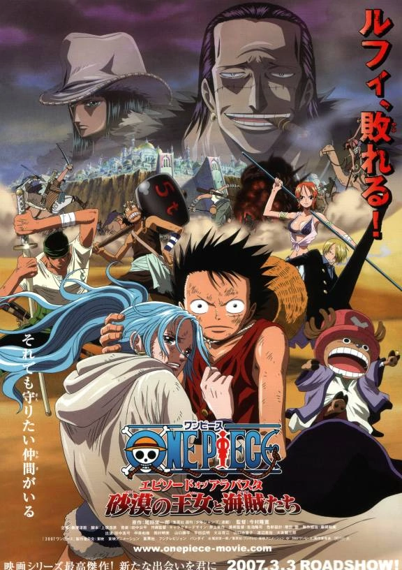

SAGA "EAST BLUE"
-

- EPISÓDIO 0001 - EU SOH LUFFY! O HOMEM QUE VAI SER O REI DOS PIRATAS!
- EPISÓDIO 0002 - O GRANDE ESPADACHIM APARECE! CAÇADOR DE PIRATAS, RORONOA ZORO
- EPISÓDIO 0003 - MORGAN VS LUFFY! QUEM É AQUELA LINDA MISTERIOSA?
- EPISÓDIO 0004 - O PASSADO DE LUFFY! SHANKS, O RUIVO APARECE
- EPISÓDIO 0005 - MEDO, PODER MISTERIOSO! PALHAÇO-PIRATA, CAPITÃO BUGGY
- EPISÓDIO 0006 - SITUAÇÃO DESESPERADORA! MOHJI, O DOMADOR, CONTRA LUFFY
- EPISÓDIO 0007 - GRANDE DUELO! ESPADACHIM ZORO VS ACROBATA CABAJI
- EPISÓDIO 0008 - QUEM SERÁ O VENCEDOR? CONFRONTO DE HABILIDADES DAS AKIMAS NO MI
- EPISÓDIO 0009 - HONORÁRIO MENTIROSO? CAPITÃO USOPP
- EPISÓDIO 0010 - O HOMEM MAIS ESTRANHO DO MUNDO! JANGO, O HIPNOTIZADOR!
- EPISÓDIO 0011 - REVELANDO A CONSPIRAÇÃO! O PIRATA MORDOMO, CAPITÃO KURO
- EPISÓDIO 0012 - IMPACTO VIOLENTO! OS PIRATAS KURONEKO, GRADES ATAQUES E DEFESAS NA LADEIRA!
- EPISÓDIO 0013 - A TEMÍVEL DUPLA! IRMÃOS NYABAN VS ZORO
- EPISÓDIO 0014 - A VOLTA DE LUFFY! A INCRÍVEL PERSISTÊNCIA DA SENHORITA KAYA
- EPISÓDIO 0015 - DERROTE O KURO! AS LÁGRIMAS DA DECISÃO DO HOMEM USOPP!
- EPISÓDIO 0016 - PROTEJAM KAYA! O GRANDIOSO TRABALHO DOS PIRATAS DE USOPP!
- EPISÓDIO 0017 - EXPLOSÃO DE RAIVA! O FINAL DA BATAKHA ENTRE KURO E LUFFY
- EPISÓDIO 0018 - VOCÊ É UMA RARIDADE! GAIMON E SEUS ESTRANHOS AMIGOS
- EPISÓDIO 0019 - O PASSADO DO SANTOURYUU! O JURAMENTO DE ZORO E KUINA!
- EPISÓDIO 0020 - O FAMOSO COZINHEIRO! SANJI, DO RESTAURANTE FLUTUANTE
- EPISÓDIO 0021 - UM FREGUÊS INDESEJADO! A COMIDA DE SANJI E A GRATIDÃO DE GIN
- EPISÓDIO 0022 - A FROTA PIRATA MAIS PODEROSA! CAPITÃO DON KRIEG
- EPISÓDIO 0023 - PROTEJAM O BARATIE! O GRANDE PIRATA DA PERNA VERMELHA
- EPISÓDIO 0024 - MIHAWK OLHOS DE FALCÃO! ZORO, O ESPADACHIM, CAI NO MAR
- EPISÓDIO 0025 - SEQUÊNCIA DE CHUTES MORTAIS! SANJI VS PEARL, O PAREDE DE FERRO
- EPISÓDIO 0026 - O SONHO DE ZEFF E SANJI! O MAR DOS SONHOS, ALL BLUE
- EPISÓDIO 0027 - O DIABÓLICO HOMEM DE SANGUE FRIO! COMANDANTE DE BATALHA DA TRIPULAÇÃO PIRATA
- EPISÓDIO 0028 - EU NÃO MORREREI! DESFECHO: LUFFY E KRIEG!
- EPISÓDIO 0029 - O RESULTADO DE UMA BATALHA MORTAL! A LANÇA INTERIOR!
- EPISÓDIO 0030 - PARTIDA! O COZINHEIRO DO MAR E LUFFY VIAJAM JUNTOS
- EPISÓDIO 0031 - O HOMEM MAIS TERRÍVEL DO EAST BLUE! ARLONG, DA GANGUE DOS HOMENS-PEIXE!
- EPISÓDIO 0032 - A BRUXA DA VILA COCOYASHI! A COMANDANTE FEMININA DE ARLONG
- EPISÓDIO 0033 - USOPP IRÁ MORRER? LUFFY AINDA NÃO DESEMBARCOU?
- EPISÓDIO 0034 - REUNIDOS! USOPP CONTA A VERDADEIRA HISTÓRIA DE NAMI
- EPISÓDIO 0035 - O PASSADO ESCONDIDO! A GUERREIRA BELL-MÈRE!
- EPISÓDIO 0036 - SOBREVIVAM! BELL-MÈRE, AMÃE, E A FAMÍLIA NAMI
- EPISÓDIO 0037 - LUFFY SE LEVANTA! O FIM DE UMA PROMESSA QUEBRADA!
- EPISÓDIO 0038 - LUFFY EM APUROS! HOMENS-PEIXE VS PIRATAS DO CHAPÉU DE PALHA!
- EPISÓDIO 0039 - LUFFY SUBMERGE! ZORO VS O POLVO HATCHAN
- EPISÓDIO 0040 - GUERREIROS ORGULHOSOS! A VIOLENTA BATALHA DE SANJI E USOPP
- EPISÓDIO 0041 - LUFFY VAI COM TUDO! A DECISÃO DE NAMI E O CHAPÉU DE PLAHA
- EPISÓDIO 0042 - EXPLOSÃO! HOMEM-PEIXE ARLONG. ATAQUE FEROZ DE DENTRO DO MAR!
- EPISÓDIO 0043 - FIM DO IMPÉRIO DOS HOMENS-PEIXE! A NAMI É MINHA COMPANHEIRA!
- EPISÓDIO 0044 - UMA PARTIDA SORRIDENTE! ADEUS CIDADE NATAL, VILA COCOYASHI
- EPISÓDIO 0045 - PROCURA-SE! O MUNDO CONHECE LUFFY DO CHAPÉU DE PALHA!
- EPISÓDIO 0046 - ATRÁS DO CHAPÉU DE PALHA! A GRANDE AVENTURA DO PEQUENO BUGGY
- EPISÓDIO 0047 - VOCÊ ESTEVE ESPERANDO POR ISSO! O RETORNO DO CAPITÃO BUGGY!
- EPISÓDIO 0048 - A CIDADE DO COMEÇO E DO FIM. A CHEGADA EM LOGUETOWN
- EPISÓDIO 0049 - SANDAI KITETSU E YUBASHIRI! AS NOVAS ESPADAS DE ZOROE A MULHER SARGENTO
- EPISÓDIO 0050 - USOPP VS DADDY, O PAI. O DUELO EM PLENA LUZ DO DIA
- EPISÓDIO 0051 - UMA INCANDESCENTE BATALHA CULINÁRIA? SANJI VS A CHEF ESPETACULAR
- EPISÓDIO 0052 - A REVANCHE DE BUGGY! O HOMEM QUE SORRI NA PLATAFORMA DE EXECUÇÃO
- EPISÓDIO 0054 - PRESSENTIMENTO DE UMA NOVA AVENTURA! APIS, A GAROTA MISTERIOSA
- EPISÓDIO 0056 - O ATAQUE DE ERIK! A GRANDE FUGA DA ILHA GUNKAN!
- EPISÓDIO 0055 - A CRIATURA MILAGROSA! O SEGREDO DE APIS E A ILHA LENDÁRIAO
- EPISÓDIO 0058 - O DUELO NAS RUÍNAS! O TENSO ZORO VS ERIK!
- EPISÓDIO 0057 - A ILHA SOLITÁRIA EM UM MAR DISTANTE! A LENDÁRIA LOST ISLAND
- EPISÓDIO 0058 - O DUELO NAS RUÍNAS! O TENSO ZORO VS ERIK!
- EPISÓDIO 0059 - LUFFY COMPLETAMENTE CERCADO! O PLANO SECRETO DO COMODORO NELSON
- EPISÓDIO 0060 - AQUELE QUE VOA SOBRE OS CÉUS! A LENDA MILENAR RENASCE!
SAGA BAROQUE WORKS / ALABASTA
- 
- EPISÓDIO 0061 - FÚRIA NA DECISÃO! SUPEREM A RED LINE!
- EPISÓDIO 0062 - NA PRIMEIRA FORTALEZA? SURGE A BALEIA GIGANTE - LABOON
- EPISÓDIO 0063 - A PROMESSA DE UM HOMEM! LUFFY E A BALEIA, A PROMESSA DO REENCONTRO
- EPISÓDIO 0064 - A CIDADE QUE RECEOCUINA OS PIRATAS? DESEMBARCANDO EM WHISKY PEAK!
- EPISÓDIO 0065 - A EXPLOSIVA SANTOURYUU! ZORO VS BAROQUE WORKS!
- EPISÓDIO 0066 - UMA LUTA SÉRIA! LUFFY VS ZORO, A GRANDE BATALHA MISTERIOSA!
- EPISÓDIO 0067 - ENTREGUEM A PRINCESA VIVI! A PARTIDA DO BANDO DE LUFFY!
- EPISÓDIO 0068 - ÂNIMO, COBBY! RECORDAÇÕES DA DURA BRUGA COM A MARINHA DE COBBY-MEPPO!
- EPISÓDIO 0069 - A DETERMINAÇÃO DE COBBY-MEPPO! O ORGULHO PATERNAL DO VICE-ALMIRANTE GARP!
- EPISÓDIO 0070 - A ANTIGA ILHA! A SOMBRA À ESPREITA EM LITTLE GARDEN
- EPISÓDIO 0071 - UM GRANDE DUELO! OS GIGANTES DORRY AZUL E BROGY VERMELHO!
- EPISÓDIO 0072 - A FÚRIA DE LUFFY! GOLPE BAIXO EM UM BATALHA SAGRADA!
- EPISÓDIO 0073 - BROGY LAMENTA A VITÓRIA! O JULGAMENTO DE ELBAF!
- EPISÓDIO 0074 - A VELA DO DIABO! LÁGRIMAS DE ARREPENDIMENTO E LÁGRIMAS DE RAIVA!
- EPISÓDIO 0075 - LUFFY É ATACADO POR MAGIA! ARMADILHA COLORIDA!
- EPISÓDIO 0076 - CONTRA-ATAQUE CRÍTICO! O SAGAZ USOPP E O KAENBOSHI!
- EPISÓDIO 0077 - ADEUS À ILHA DOS GIGANTES! EM DIREÇÃO A ALABASTA!
- EPISÓDIO 0078 - NAMI DOENTE? DO OUTRO LADO DA NEVE QUE CAI NO OCEANO!
- EPISÓDIO 0079 - EMBOSCADA! O BILKING E WAOPOL, O BLIK
- EPISÓDIO 0080 - UMA ILHA SEM MÉDICO? AVENTURA EM UM PAÍS SEM NOME!
- EPISÓDIO 0081 - ESTÁ FELIZ? UMA MÉDICA QUE FOI CHAMADA DE BRUXA
- EPISÓDIO 0082 - A DECISÃO DE DALTON! A CHEGADA DAS FORÇAS DE WAPOL
- EPISÓDIO 0083 - A ILHA QUE VIVE SOB NEVE!SUBA OS DRUM ROCKIES!
- EPISÓDIO 0084 - A RENA DO NARIZ AZUL! O SEGREDO DE CHOPPER.
- EPISÓDIO 0085 - O SONHO DOS EXCLUÍDOS! HIRILUK, O CURANDEIRO!
- EPISÓDIO 0086 - AS FLORES DE CEREJEIRA DE HIRILUK E A DETERMINAÇÃO HERDADA!
- EPISÓDIO 0087 - CONTRA O EXÉRCITO DE WAPOL! AS HABILIDADES DA BAKU BAKU NO MI
- EPISÓDIO 0088 - A AKUMA NO MI DO TIPO ZOAN! AS SETE TRANSFORMAÇÕES DE CHOPPER!
- EPISÓDIO 0089 - QUANDO UM REINADO ACABA! A CRENÇA DA BANDEIRA SERÁ ETERNA
- EPISÓDIO 0090 - AS FLORES DE CEREJEIRA DE HIRILUK! O MILAGRE NOS DRUM ROCKIES
- EPISÓDIO 0091 - ADEUS ILHA DE DRUM! ESTOU INDO PARA O MAR!
- EPISÓDIO 0092 - O HERÓI DE ALABASTA! E A BAILARINA DO NAVIO
- EPISÓDIO 0093 - CHEGANDO NO PAÍS DO DESERTO! O PÓ-QUE-FAZ-CHOVER E O EXÉRCITO REBELDE
- EPISÓDIO 0094 - O REENCONTRO DOS PODEROSOS! SEU NOME É ACE DOS PUNHOS DE FOGO
- EPISÓDIO 0095 - ACE E LUFFY! CALOROSAS LEMBRANÇAS E LAÇOS DE IRMANDADE
- EPISÓDIO 0096 - A CIDADE VERDE, ERUMALU, E OS KUNG FU DUGONG!
- EPISÓDIO 0097 - AVENTURA NO PAÍS DA AREIA! OS MONSTROS DA TERRA ESCALDANTE
- EPISÓDIO 0098 - SURGEM OS PIRATAS DO DESERTO! HOMENS QUE VIVEM LIVREMENTE
- EPISÓDIO 0099 - O ESPÍRITOS DOS FALSOS! O CORAÇÃO DO EXÉRCITO REBELDE, KAMYU!
- EPISÓDIO 0100 - O GUERREIRO REBELDE. KOZA! O SONHO JURADO A VIVI
- EPISÓDIO 0101 - A BATALHA NO NEVOEIRO DE CALOR! ACE VS HOMEM ESCOPIÃO
- EPISÓDIO 0102 - AS RUÍNAS ANTIGAS E AS ALMAS PERDIDAS! AMIGOS DE VIVI, E A FORMA DA NAÇÃO
- EPISÓDIO 0103 - NOSPIDERS CAFÉ. OS LÍDERES INIMIGOS SE REÚNEM AS OITO HORAS.
- EPISÓDIO 0104 - LUFFY VS VIVI! JURAMENTO DE LÁGRIMAS QE CRIAM COMPANHEIROS
- EPISÓDIO 0105 - GUERRA EM ALABASTA! RAINBASE, A CIDADE DOS SONHOS
- EPISÓDIO 0106 - A ABSOLUTA ARMADILHA FINAL! INVESTIDA AO RAIN DINNERS
- EPISÓDIO 0107 - A OPERAÇÃO UTOPIA COMEÇA! OS REBELDES COMEÇAM A SE MOVIMENTAR
- EPISÓDIO 0108 - A TERRÍVEL BANANAWANI E MR PRINCE
- EPISÓDIO 0109 - A CHAVE PARA UMA REVERSÃO E FUGA! A DORU DORU BALL!
- EPISÓDIO 0110 - BATALHA SEM COMPAIXÃO! LUFFY VS CROCODILE
- EPISÓDIO 0111 - CORRER PARA UM MILAGRE! ALABASTA, REINO ANIMAL
- EPISÓDIO 0112 - EXÉRCITO REBELDE VS EXÉRCITO REAL! O COMBATE FINAL SERÁ EM ALUBARNA
- EPISÓDIO 0113 - ALUBARNA AOS SOFRIMENTOS! A FEROZ BATALHA DO CAPITÃO KAROO!
- EPISÓDIO 0114 - INSULTO AO SONHO DOS AMIGOS! BATALHA NA 4ª AVENIDA NA GALERIA TOUPEIRA
- EPISÓDIO 0115 - A GRANDE INTERPRETAÇÃO HOJE! MANE MANE MONTAGE!
- EPISÓDIO 0116 - TRANSFORMANDO-SE EM NAMI! O PODEROSO BALLET KENPO DE BON CLAY
- EPISÓDIO 0117 - A ADVERTÊNCIA DO OTRNADO DE NAMI! EXPLOSÃO DO CLIMA TACT
- EPISÓDIO 0118 - O SEGREDO DA FAMÍLIA REAL! A ANTIGA ARMA, PLUTON
- EPISÓDIO 0119 - ESSÊNCIA DE UMA PODEROSA
- EPISÓDIO 0120 - A BATALHA TERMINA! KOZA ERGUE A BANDEIRA BRANCA!
- EPISÓDIO 0121 - A VOZ DE VIVI NÃO É OUVIDA! CAI UM HERÓI!
- EPISÓDIO 0122 - CROCODILO DE AREIA E LUFFY DE ÁGUA! DUELO MORTAL: SEGUNDO ROUND
- EPISÓDIO 0123 - CHEIRO DE CROCODILO! CORRA PARA O CEMITÉRIO DA FAMÍLIA REAL, LUFFY!
- EPISÓDIO 0124 - A HORA DO PESADELO SE APROXIMA! A VASE SECRETA DO CLÃ SUNA SUNA
- EPISÓDIO 0125 - ASAS MAGNÍFICAS! MEU NOME É PELL. O ESPÍRITO GUARDIÃO DO REINO
- EPISÓDIO 0126 - EU VOU TE SUPERAR! A CHUVA CAI SOBRE ALABASTA
- EPISÓDIO 0127 - ADEUS AS ARMAS! PIRATAS E UM POUCO DE JUSTIÇA
- EPISÓDIO 0128 - O BANQUETE DOS PIRATAS E O PLANO PARA ESCAPAR DE ALABASTA!
- EPISÓDIO 0129 - TUDO COMEÇOU NAQUELE DIA! VIVI CONTA SUAS AVENTURAS
- EPISÓDIO 0130 - CHEIRO DE PERIGO! A SÉTIMA É NICO ROBIN
- EPISÓDIO 0131 - PRIMEIRO PACIENTE! O SEGREDO DA RUMBLE BALL
- EPISÓDIO 0132 - A REBELIÃO DA NAVEGADORA! POR UM SONHO INABALÁVEL
- EPISÓDIO 0133 - RECEITA HERDADA! SANJI, O "EXPERT" DO CURRY
- EPISÓDIO 0134 - EU VOU FAZER FLORESCER! A BOLA 8-SHAKU DO VIRIL USOPP
- EPISÓDIO 0135 - O INFAME CAÇADOR DE PIRATAS! O ERRANTE ESPADACHIM, ZORO
SAGA SKYPIEA

- Episódio 0136 - Zenny Vive na Ilha dos Carneiros e há um Barco Pirata na sua Montanha
- Episódio 0137 - Não se Parece uma Ganância Incrível? A Ambição de Zenny!
- Episódio 0138 - O Paradeiro do Tesouro da Ilha! A Todo Vapor, Piratas de Zenny!
- Episódio 0139 - A Lenda da Neblina Arco-Íris! O Velho Henzon da Ilha Ruluka
- Episódio 0140 - Habitantes da "Terra do Nunca"! Os piratas da abóbora!
- Episódio 0141 - Sentimentos pela terra natal! O inescapável Cemitério dos Piratas
- Episódio 0142 - Batalha inevitável! A ambição de Whetton e a Torre Arco-Íris
- Episódio 0143 - Então começa a lenda! Para o fim do Arco-Íris!
- Episódio 0144 - O Log atraído! Masira, o Rei do Resgate!
- Episódio 0145 - Monstros aparecem! Não toque nos Piratas do Barba Branca.
- Episódio 0146 - Pare de sonhar! A cidade do ridículo, Mock Town!
- Episódio 0147 - O pico dos piratas! O homem que fala dos sonhos e o rei da exploração.
- Episódio 0148 - A família lendária! "Norland, o Mentiroso".
- Episódio 0149 - Em direção às nuvens! Encontrem o Southbird!
- Episódio 0150 - Não é possível realizar o sonho? Bellamy contra a Aliança Saruyama.
- Episódio 0151 - O Homem de Cem Milhões! A autoridade máxima do mundo e o pirata Barba Negra!
- Episódio 0152 - Navegando até o céu! Peguem o Knock Up Stream!
- Episódio 0153 - Esse é o mar do céu! O cavaleiro do céu e o portão do paraíso.
- Episódio 0154 - Skypiea, o reino de Deus! Os anjos da praia de nuvens.
- Episódio 0155 - O solo sagrado proibido! A terra onde Deus mora e o julgamento Celestial!
- Episódio 0156 - Já são criminosos!? Os guardas da lei de Skypiea.
- Episódio 0157 - Podemos fugir!? Começa a provação de Deus!
- Episódio 0158 - Armadilha na Rua Adorável! O todo poderoso Deus Enel
- Episódio 0159 - Vá em frente, pequeno corvo! Rumo ao altar do sacrifício!
- Episódio 0160 - Taxa de sobrevivência 10%! O sacerdote Satori com o poder do Mantra!
- Episódio 0161 - O perigo da provação das Bolhas! Lutem até a morte na Floresta perdida!
- Episódio 0162 - Chopper em perigo! Antigo Deus x Sacerdote Shura!
- Episódio 0163 - Sempre Misteriosa! Provação das cordas e provação do amor!?
- Episódio 0164 - Acendam a chama da sabedoria! Wiper, o Guerreiro
- Episódio 0165 - Terra Flutuante de Ouro, Jaya! Para o Santuário de Deus!
- Episódio 0166 - Véspera do Festival do Ouro! Afeta a Vearth
- Episódio 0167 - Aparece o Deus Enel. Luta pela Sobrevivência
- Episódio 0168 - A Anaconda ataca! O jogo de sobrevivência começa!
- Episódio 0169 - A Ameaça de Vida Rejeitada! A Determinação de Wiper, O Demônio da guerra
- Episódio 0170 - A Feroz Batalha Celeste! Pirata Zoro vs. Guerreiro Braham
- Episódio 0171 - Enorme Bazooka de Fogo! Luffy vs. Demônio da Guerra Wiper
- Episódio 0172 - A Provação do Pântano! Chopper vs. Sacerdote Gedatsu!!
- Episódio 0173 - A Habilidade Invencível! O Verdadeiro Caráter De Enel Revelado
- Episódio 0174 - A Cidade Desaparecida! As Magníficas Ruínas de Shandora!!
- Episódio 0175 - Sobrevivência 0%!! Chopper vs. Sacerdote Ohm
- Episódio 0176 - Escale o Giant Jack!! Luta Nas Ruínas Superiores
- Episódio 0177 - O Teste Final Da Provação Do Ferro! Luta Mortal Na Gaiola De Espinhos Brancos
- Episódio 0178 - Ataque Da Lâmina Jorrante! Zoro vs. Sacerdote Ohm!!
- Episódio 0179 - O Desmoronamento Das Ruínas Superiores! O Quinteto Final!!
- Episódio 0180 - Batalha Nas Ruínas Superiores! Desejo De Deus Enel!!
- Episódio 0181 - Ambição a Fairy Vearth. A Arca, Maxim!!
- Episódio 0182 - Confronto Final! Pirata Luffy vs. Deus Enel!!
- Episódio 0183 - Maxim se Emerge! O Começo de Deathpiea!!
- Episódio 0184 - A queda de Luffy! O Julgamento de Deus e o Desejo de Nami!!
- Episódio 0185 - Os Dois Acordaram! A Linha de Frente do Amor Ardente!!
- Episódio 0186 - Capricho com a Destruição. A Iminente Ruína da Ilha do Céu!!
- Episódio 0187 - Guiado Pelo Badalar do Sino! O Conto do Grande Guerreiro e O Explorador
- Episódio 0188 - Liberados da Desgraça! As Lágrimas do Grande Guerreiro!!
- Episódio 0189 - Amigos Para Sempre! O Sino do Juramento que Badala Pelo Mar!!!!
- Episódio 0190 - A Destruição de Angel Island! Terror do Raigou Descendente!!
- Episódio 0191 - Derrubem Giant Jack! A Última Esperança de Fuga
- Episódio 0192 - Milagre Na Terra de Deus. A Canção de Amor Ouvida Pelos Anjos
- Episódio 0193 - A Guerra Chega a um Fim! Badalando Longe e Amplamente a Fantasia Orgulhosa
- Episódio 0194 - Eu Vim Aqui! O Laço dos Poneglyphs
- Episódio 0195 - O Mar Azul Finalmente!! Uma Trama Final com Emoção
- Episódio 0196 - Estado de Emergência Proclamado! Infiltração do Notório Navio Pirata!
- Episódio 0197 - Sanji o Cozinheiro! Demonstração do seu real valor no Refeitório da Marine!
- Episódio 0198 - Zoro é Capturado. Operação Urgente de Chopper!
- Episódio 0199 - A Busca dos Marines se Aproximando! O Segundo a ser Capturado!
- Episódio 0200 - O Grande Plano de Fuga! A Determinação de Luffy e Sanji!
- Episódio 0201 - A batalha na ponte! O Esquadrão das Almas Ardentes ataca!
- Episódio 0202 - O Resgate do Going Merry! Atravessando as Linhas Inimigas!
- Episódio 0203 - O Navio Pirata desaparece! Batalha na Fortaleza, Round 2!
- Episódio 0204 - A Operação para recuperar o Ouro e a Operação para recuperar o Waver!
- Episódio 0205 - A estratégia secreta de vitória de Jonathan. O plano do Rodeio Pirata
- Episódio 0206 - Adeus, Fortaleza! A Escapada Final
SAGA WATER 7 / ENIES LOBBY

- Episódio 0207 - A Grande Aventura em Long Ring Long Land!
- Episódio 0208 - Bando de Piratas do Foxy e Davy Back!
- Episódio 0209 - Primeiro Round na Donut Race!!
- Episódio 0210 - Foxy, a Raposa Prateada! Uma Ofensiva Violenta
- Episódio 0211 - O Segundo Evento Batendo no Groggy Ring
- Episódio 0212 - Cartas Vermelhas Velozes Groggy Ring
- Episódio 0213 - O Terceiro Evento Voltas e Voltas no Roller Racer
- Episódio 0214 - O Clímax da Corrida Entrando no Round Final
- Episódio 0215 - O Ardente zumbido das bolas! É a DodgeBall dos Piratas!
- Episódio 0216 - Uma Batalha no Desfiladeiro! A queda de Daruma-san!
- Episódio 0217 - Confronto de Capitães A Última Batalha: Combate
- Episódio 0218 - Válvula de Raios Noro Noro vs. O Invulnerável Luffy
- Episódio 0219 - Heróica Luta em Combate Feroz O Decisivo Final
- Episódio 0220 - Você Perdeu Sua Memória? Foi Removida? Quem São Vocês?
- Episódio 0221 - O Garoto Misterioso da Flauta e a Dedução de Robin
- Episódio 0222 - Vamos Recuperar Nossas Memórias! Os Piratas Descem na Ilha!
- Episódio 0223 - As Presas de Zoro! Uma Luta com um Animal Selvagem!
- Episódio 0224 - O Contra Ataque Final do Verdadeiro Ladrão de Memórias!
- Episódio 0225 - O homem de incrível orgulho! Foxy, A Raposa Prateada!
- Episódio 0226 - O incrível poder está perto! Um homem muito perigoso
- Episódio 0227 - Almirante de base da marinha, Aokiji! A ameaça mais poderosa.
- Episódio 0228 - O embate entre gelo e borracha! Luffy vs Aokiji.
- Episódio 0229 - O trem do oceano funcionando, a cidade das águas Water 7
- Episódio 0230 - A aventura nas cidade das águas! Objetivo estaleiro gigante!
- Episódio 0231 - A Gangue de Franky e Iceburg
- Episódio 0232 - Companhia Galley-La! A magnífica Doca Um
- Episódio 0233 - Sequestro Pirata! O Navio Pirata só Espera a Morte
- Episódio 0234 - Salvando um Amigo! A Incursão na Franky House
- Episódio 0235 - A Grande Luta a Luz da Lua! O Navio Pirata Treme em Tristeza!
- Episódio 0236 - Luffy Vs. Usopp! O Espírito dos Homens Colidindo.
- Episódio 0237 - A cidade da água está agitada! Iceburg-san foi atingido!
- Episódio 0238 - Homem Borracha Vs. Cyborg da Respiração de Fogo
- Episódio 0239 - Os Criminosos são os Piratas do chapéu de Palha?Guarda-costas de Water 7
- Episódio 0240 - Despedida eterna? A Mulher Que Aguenta a Escuridão, Nico Robin
- Episódio 0241 - Pegue Robin! Decisão da Tripulação de Chapéu de Palha
- Episódio 0242 - O sinal é a explosão! A CP9 começa a se mover
- Episódio 0243 - O CP9 Desmascarado! Seu Chocante Rosto
- Episódio 0244 - O laço escondido! Iceburg e Franky!!
- Episódio 0245 - Volte Robin! Confronto contra a CP9
- Episódio 0246 - Aniquilação dos Chapéu de Palha? O terror do modelo leopardo!
- Episódio 0247 - O homem amado pelo navio! As lágrimas de Usopp!
- Episódio 0248 - O passado de Franky! O dia que o Trem do Oceano funcionou
- Episódio 0249 - Conspiração de Spandam! O dia em que o Trem do Oceano balançou
- Episódio 0250 - O fim do Lendário Homem! O dia que o Trem do Oceano chorou
- Episódio 0251 - A verdade por trás da traição! O sorriso sincero de Robin
- Episódio 0252 - O apito que separa os Companheiros! O trem do Oceano Corre
- Episódio 0253 - Acusação do Sanji! A batalha do trem do Oceano na tempestade!
- Episódio 0254 - O grito da alma de Nami! Ressurreição de Luffy, o Chapéu de Palha
- Episódio 0255 - Outro Trem do Oceano? A saída de Rocketman
- Episódio 0256 - O Resgate de Nossos Amigos! Os punhos que carregam a destruição para os inimigos
- Episódio 0257 - Cortando pela onda! Zoro e Luffy, o combo supremo
- Episódio 0258 - Um homem misterioso aparece?! O nome dele é Sogeking!
- Episódio 0259 - A batalha dos cozinheiros! Sanji vs. Ramen kenpo
- Episódio 0260 - Duelo no telhado! Franky vs. Nero
- Episódio 0261 - Impacto Demônio Cortador Zoro vs. Cortador de Navio T-Bone
- Episódio 0262 - Robin resiste! O plano esperto de Sogeking!
- Episódio 0263 - A ilha do julgamento! A vista de Enies Lobby
- Episódio 0264 - Iniciar plano de invasão! O avanço do grupo do chapéu de palha!
- Episódio 0265 - Investida de Luffy! Grande decisiva batalha na ilha judiciária!
- Episódio 0266 - Batalha com os Gigantes! Abram a Segunda Porta!
- Episódio 0267 - Os meios de escapar são liberados! Voa através do céu, Rocketman!
- Episódio 0268 - Alcancem Luffy! A Repentina Guerra dos Chapéu de Palha
- Episódio 0269 - Robin é traída! As expectativas do governo mundial
- Episódio 0270 - Nos devolva Robin! Luffy vs. Blueno
- Episódio 0271 - Não Parem! Levantem o sinal de um contra-ataque!
- Episódio 0272 - Luffy à Vista! Reunião na Estação do Tribunal!
- Episódio 0273 - Tudo para proteger meus Amigos! O Gear Second em Movimento!
- Episódio 0274 - Responda-nos Robin! O Clamor da Equipe dos Chapéu de Palha!
- Episódio 0275 - O Passado de Robin! A Garota que foi chamada de Demônio!
- Episódio 0276 - A Mãe e a Filha Predestinadas! O Nome da Mãe é Olvia
- Episódio 0277 - A Tragédia de Ohara! O Terror do Buster Call.
- Episódio 0278 - Diga que você quer viver! Nós somos companheiros!!
- Episódio 0279 - Pulem No Precipício! Os sentimentos de Luffy!! (Filler)
- Episódio 0280 - O Jeito De Viver de Um Homem! As Técnicas Do Zoro, E o Sonho De Usopp
- Episódio 0281 - Lágrimas que criaram um laço entre Amigos! O mapa-múndi de Nami
- Episódio 0282 - Uma despedida fortalece um homem! Sanji e Chopper
- Episódio 0283 - Tudo por um Amigo! A Escuridão de Robin!
- Episódio 0284 - Eu não vou entregar as plantas! A decisão de Franky!
- Episódio 0285 - Peguem as cinco chaves! Chapéus de Palha contra CP9!
- Episódio 0286 - O poder do Akuma no Mi! Kaku e Jabura se transformam.
- Episódio 0287 - Eu não chuto mesmo que eu morra! O código de honra de Sanji!
- Episódio 0288 - O Erro de Fukurou! A minha cola é a água da vida!
- Episódio 0289 - A nova técnica do Zoro explode! O nome da Katana é Sogeking?
- Episódio 0290 - Fora de controle! Rumble proibido de Chopper!
- Episódio 0291 - O Retorno de Luffy Oyabun!~Um Sonho ou Bilhete Premiado
- Episódio 0292 - A Grande Competição de Mochi do Castelo. O plano do Nariz Vermelho
- Episódio 0293 - Kalifa a mestra das bolhas! Nami se aproxima da armadilha de sabão!
- Episódio 0294 - O escoar de más notícias! O Buster Call é acionado
- Episódio 0295 - 5 Namis? O contra ataque com miragens!
- Episódio 0296 - A determinação de Nami! Atirem no Chopper furioso!
- Episódio 0297 - Apresentando o Caçador Sanji? o Lamento do Lobo Mentiroso!
- Episódio 0298 - O Chute Flamejante! O Banquete de Chutes de Sanji!
- Episódio 0299 - O Furioso Ataque do Saque de Espadas! Zoro x Kaku: O Incrível Duelo Cortante!
- Episódio 0300 - Zoro, o Deus da fúria! A re-encarnação de Ashura mostrada por seu espírito!
- Episódio 0301 - A surpresa de Spandam! O herói que se levanta na Torre da Justiça!
- Episódio 0302 - Robin é Salva! Luffy vs. Lucci: A Batalha Decisiva!
- Episódio 0303 - O Criminoso é Luffy Oyabun? A Busca pela Grande Sakura Perdida!
- Episódio 0304 - Se Eu Não Vencer, Não Posso Proteger Ninguém! O Gear Third É Ativado!
- Episódio 0305 - O Terrível Passado!A Justiça Negra e Rob Lucci!
- Episódio 0306 - Uma Misteriosa Sereia Aparece? No Limiar da Perda de Consciência!
- Episódio 0307 - A ilha que afunda sob Fogo! O grito de arrependimento de Franky!
- Episódio 0308 - Esperem por Luffy! Confronto mortal na Ponte da Hesitação!
- Episódio 0309 - Sentimentos Mostrados com os Punhos! O Poder Máximo da Metralhadora de Luffy!
- Episódio 0310 - Um Amigo que Vem do Mar! O Laço Mais Forte do Bando do Chapéu de Palha
- Episódio 0311 - A Grande Fuga! O Caminho da Vitória é dos Piratas!
- Episódio 0312 - Obrigado Merry! Neve no Mar da Separação!
- Episódio 0313 - Nada de Descanso! O Vice-Almirante Que Tem o Punho do Amor!
- Episódio 0314 - A Mais Forte Linhagem Sanguínea? O Pai de Luffy é Revelado!
- Episódio 0315 - O Novo Mundo! A Localização da Grand Line
- Episódio 0316 - Shanks em Ação! Uma Cerimônia à Era da Fúria.
- Episódio 0317 - A Garota Que Procura Pelo Yagara! Investigação na Cidade das Águas!
- Episódio 0318 - Uma Mãe tem que ser Forte! Zoro, a empregada atrapalhada
- Episódio 0319 - O Choque de Sanji! Um Velho Misterioso e Muita Culinária
- Episódio 0320 - Finalmente Todos São Procurados! O Bando de Mais de 600 Milhões!
- Episódio 0321 - O Rei das Feras que Cruzará o Oceano! O Navio dos Sonhos Está Pronto!
- Episódio 0322 - Adeus Meus Amados Seguidores! A Partida de Franky!
- Episódio 0323 - A Partida da Cidade das Águas! A Distinção do Homem Usopp!
- Episódio 0324 - As Recompensas Mundiais! Os Cidadãos Dançam Enquanto o Navio Veleja!
- Episódio 0325 - A mais terrível das Akuma no mi! A escuridão de Barba Negra ataca Ace!
SAGA THRILLER BARK
SAGA GUERRA DE MARINEFORD

- Episódio 0385 - O Meio da Grand Line. Chegamos! A Red Line.
- Episódio 0386 - Um Rancor Contra os Chapéus de Palha. A Chegada de Duval da Máscara de Ferro.
- Episódio 0387 - Reencontro Predestinado! Salvem o Homem-Peixe Aprisionado.
- Episódio 0388 - Tragédia! A Verdade de Duval Desmascarada.
- Episódio 0389 - Explosão! A Arma Super Secreta do Sunny, o Canhão Gaon
- Episódio 0390 - Desembarcando Para Chegar na Ilha dos Homens-Peixe. O Arquipélago Sabaody.
- Episódio 0391 - Tirania! Os Governantes de Sabaody: Os Tenryuubitos.
- Episódio 0392 - Novos Rivais se Reúnem! Os 11 Supernovas.
- Episódio 0393 - O Alvo é Camie!! Os Sequestradores se Aproximam.
- Episódio 0394 - Salvem a Camie. A Lembrança Sombria Que Ficou no Arquipélago.
- Episódio 0395 - Tempo Limite. Começa o Leilão Humano.
- Episódio 0396 - Soco Explosivo! Acabem Com o Leilão.
- Episódio 0397 - Grande Pânico! Batalha Mortal no Leilão.
- Episódio 0398 - O Almirante Kizaru se Move! O Arquipélago Sabaody em caos.
- Episódio 0399 - Superando o Cerco! Marinha VS Três Capitães.
- Episódio 0400 - Roger e Rayleigh - O Rei dos Piratas e Seu Braço Direito.
- Episódio 0401 - Impossível de se desviar!? O Chute na Velocidade da Luz do Almirante Kizaru!.
- Episódio 0402 - Devastador! A Arma de Combate da Marinha Pacifista.
- Episódio 0403 - Um inimigo ainda mais poderoso se aproxima! Aquele que empunha machados Sentoumaru
- Episódio 0404 - Violento Ataque do Almirante Kizaru - A Situação Desesperadora do Bando do Chapéu de Palha.
- Episódio 0405 - O Fim da Tripulação - O Último Dia do Bando do Chapéu de Palha
- Episódio 0406 - Episódio Especial Histórico - Luffy-Oyabun Aparece Novamente.
- Episódio 0407 - Episódio Especial Histórico - Acabem Com a Armadilha da Companhia Thriller!.
- Episódio 0408 - Desembarque! Ilha proibida para homens, Amazon Lily!.
- Episódio 0409 - Aventura na ilha das mulheres! Depressa, ao encontro dos companheiros.
- Episódio 0410 - Todos estão bêbados de amor! A imperatriz pirata, Boa Hancock.
- Episódio 0411 - O segredo escondido em suas costas. Luffy encontra a princesa serpente.
- Episódio 0412 - Julgamento impiedoso! Margaret transformada em pedra!
- Episódio 0413 - O duro desafio de Luffy! O poderoso Haki das irmãs cobras!
- Episódio 0414 - Batalha com habilidades no poder máximo! Gomu Gomu vs Hebi Hebi.
- Episódio 0415 - A confissão de Hancock. O terrível passado das irmãs.
- Episódio 0416 - Resgatem Ace! O novo destino é a grande prisão.
- Episódio 0417 - O amor é um furacão! Hancock apaixonada.
- Episódio 0418 - O Paradeiro da tripulação. A ciência do Clima e a Ilha Mecânica.
- Episódio 0419 - O Paradeiro da tripulação. A ilha dos pássaros gigantes e o paraíso.
- Episódio 0420 - O Paradeiro da tripulação. A construção da ponte e as plantas assassinas.
- Episódio 0421 - O Paradeiro da tripulação. A princesa negativa e o rei dos demônios.
- Episódio 0422 - Invasão Mortal! A Prisão Submarina de Impel Down!
- Episódio 0423 - Reencontro no Inferno?! O Homem que Comeu a Bara Bara no Mi!
- Episódio 0424 - Avancem no Inferno Carmesim! O Plano de Quebra-Quebra de Buggy!
- Episódio 0425 - O Homem Mais Forte da Prisão! Magellan, o Homem-Veneno!
- Episódio 0426 - As ambições do leão dourado começam a se mover.
- Episódio 0427 - A pequena East Blue é o alvo.
- Episódio 0428 - O poderoso ataque dos piratas Amigo!
- Episódio 0429 - Luffy vs Largo. É hora da batalha!
- Episódio 0430 - Um Shichibukai dentro da prisão! Jinbei, o Cavaleiro dos Mares.
- Episódio 0431 - A Cilada do Chefe de Segurança Saldeath! Nível 3 - O Inferno da Inanição!
- Episódio 0432 - O Cisne se Liberta! Reencontro com Bon Clay!
- Episódio 0433 - A Estratégia do Diretor Magellan! O Cerco ao Chapéu de Palha!
- Episódio 0434 - Todas as Forças Reunidas! A Batalha do Nível 4, o Inferno Escaldante!
- Episódio 0435 - O Poderoso Magellan! Bon Clay Foge Diante do Inimigo!
- Episódio 0436 - A Hora do Confronto! O Desesperado Ataque Final de Luffy!
- Episódio 0437 - Por seu Amigo! Bon Clay e o Resgate Mortal!
- Episódio 0438 - Um Paraíso no Inferno ?! O Nível 5.5 de Impel Down!
- Episódio 0439 - Começa o Tratamento de Luffy! O Milagroso Poder de Iva!
- Episódio 0440 - Acredite em Milagres! As Lágrimas do Coração de Bon Kurei!
- Episódio 0441 - O Retorno de Luffy! Ivan Começa o Plano de Fuga!
- Episódio 0442 - Começa a Escolta de Ace! A Batalha no Nível 6!
- Episódio 0443 - A Força Aliada Suprema se Forma! Impel Down Estremece!
- Episódio 0444 - Ainda mais confusão! A invasão do Barba Negra
- Episódio 0445 - Encontro Perigoso! Barba Negra e Shiryu da Chuva!
- Episódio 0446 - Nenhum Preço é Alto Demais! A Alma Implacável de Hannyabal!
- Episódio 0447 - Jet Pistol de Fúria! Luffy x Barba Negra!
- Episódio 0448 - Detenha Magellan! Explode a Técnica Esotéria de Ivan!
- Episódio 0449 - A Ardilosa Jogada de Magellan! Um Plano de Fuga Frustrado!
- Episódio 0450 - A Equipe de Fugitivos em Apuros! A Técnica Proibida: O Demônio Venenoso!
- Episódio 0451 - Vem o Milagre Final! A Travessia dos Portões da Justiça!
- Episódio 0452 - Para o QG da Marinha! Ao Resgate de Ace!
- Episódio 0453 - O Paradeiro dos Companheiros! O Relatório de Weatheria e os Animais Ciborgues!
- Episódio 0454 - O Paradeiro dos Companheiros! Um Filhote de Pássaros Gigantes e um Confronto Rosa!
- Episódio 0455 - O Paradeiro dos Companheiros! Os Revolucionários e a Armadilha da Floresta da Gula!
- Episódio 0456 - O Paradeiro dos Companheiros! A Tumba Gigante e a Dívida das Calcinhas!
- Episódio 0457 - Retrospectiva Especial a Caminho de Marineford! O Voto de Irmandade!
- Episódio 0458 - Retrospectiva Especial a Caminho de Marineford! Os Três Almirantes se Reúnem!
- Episódio 0459 - A Instantes da Batalha! A Mais Poderosa Formação da Marinha a Postos!
- Episódio 0460 - Uma Vasta Frota no Horizonte! A Chegada dos Piratas do Barba Branca!
- Episódio 0461 - O Começo da Guerra! O Passado de Ace e Barba Branca!
- Episódio 0462 - A Força Capaz de Destruir o Mundo! O Poder da Gura Gura no Mi!
- Episódio 0463 - Um Inferno Devastador! O Poder do Almirante Akainu!
- Episódio 0464 - Um Descendente da Besta! Little Oars Jr. a Toda Velocidade!
- Episódio 0465 - Justiça Para os Vencedores! A Estratégia de Sengoku em Ação!
- Episódio 0466 - A Chegada da Equipe do Chapéu de Palha! A Tensão Cresce no Campo de Batalha!
- Episódio 0467 - Vou te Salvar, Mesmo que eu Morra! Começa a Batalha entre Luffy e a Marinha!
- Episódio 0468 - Árduas e Consecutivas Batalhas! Usuários de Akuma no Mi vs. Usuários de Akuma no Mi!
- Episódio 0469 - A Transformação de Kuma! O Golpe Furioso de Ivan!
- Episódio 0470 - O Mestre Espadachim, Mihawk! Luffy Sob Ataque da Espada Negra!
- Episódio 0471 - A Estratégia de Extermínio em Ação! O Poder dos Pacifistas!
- Episódio 0472 - O Estrategema de Akainu! Barba Branca é Traído!
- Episódio 0473 - As Cercas são Ativadas! Os Piratas do Barba Branca são Encurralados!
- Episódio 0474 - A Ordem de Execução é Emitida! Avancem Através das Cercas!
- Episódio 0475 - Rumo à Fase Final! O Ás na Manga para a Virada do Barba Branca!
- Episódio 0476 - Luffy no Fim de Suas Forças! Uma Batalha de Tudo ou Nada na Praça Oris!
- Episódio 0477 - O Poder que Reduz a Vida! Hormônio de Energia, Restaurar!
- Episódio 0478 - Para Cumprir uma Promessa! Luffy e Koby Colidem!
- Episódio 0479 - Enfim no Cadafalso! Caminho Aberto Até Ace!
- Episódio 0480 - Caminhos Opostos! Luffy vs. Garp!
- Episódio 0481 - Ace é Resgatado! A Ordem Final do Barba Branca!
- Episódio 0482 - O Poder Capaz de Queimar Até o Fogo! A Perseguição Impiedosa de Akainu!
- Episódio 0483 - Em Busca da Resposta! Ace dos Punhos de Fogo Morre no Campo de Batalha!
- Episódio 0484 - A Queda do QG da Marinha! A Indescritível Cólera do Barba Branca!
- Episódio 0485 - Acerto de Contas! Barba Branca vs. Piratas do Barba Negra!
- Episódio 0486 - Começa o Espetáculo! Revelado o Plano do Barba Negra!
- Episódio 0487 - O Insaciável Akainu! Punhos de Lava Atingem Luffy!
- Episódio 0488 - Um Grito de Desespero! Um Momento de Coragem que Mudará o Futuro!
- Episódio 0489 - Lá vem Shanks! A Guerra dos Melhores Chega ao Fim!
- Episódio 0490 - Poderosos líderes se enfrentam! O início da nova era!
- Episódio 0491 - Chegando na Ilha das Mulheres!A Cruel Realidade Tortura Luffy!
- Episódio 0492 - A dupla mais forte! O grande esforço de Luffy e Toriko!
- Episódio 0493 - Luffy e Ace, a história dos irmãos!
- Episódio 0494 - Sabo aparece! O garoto do Terminal Cinza.
- Episódio 0495 - Eu não Fugirei! O Resgate Suicida de Ace.
- Episódio 0496 - Algum Dia Iremos! Os Copos de Juramento dos Três Garotos!
- Episódio 0497 - Familia Dadan é separada!? Revelado! O esconderijo secreto.
- Episódio 0498 - Luffy, o aprendiz!? O homem que lutou contra o Rei dos Piratas!
- Episódio 0499 - Batalha da morte Luffy Corra! Quem se tornará o Capitão?
- Episódio 0500 - Liberdade roubada! A armadilha dos Nobres se aproxima dos três irmãos.
- Episódio 0501 - As chamas estão acesas - O Terminal Cinza está em crise.
- Episódio 0502 - Onde está a liberdade? A triste partida do garoto.
- Episódio 0503 - Conto com você! Uma carta do irmão!
- Episódio 0504 - Para Cumprir a Promessa. Partidas Separadas!
- Episódio 0505 - Eu quero vê-los! O grito cheio de lágrimas de Luffy
- Episódio 0506 - O bando do Chapéu de Palha chocado! A má notícia se espalha!
- Episódio 0507 - Reunido com o Rei das Trevas! A hora da decisão de Luffy
- Episódio 0508 - Ao nosso capitão! A fuga da Ilha do Céu e o incidente na Ilha de Inverno
- Episódio 0509 - Natureza! O Grande Espadachim Mihawk! Zoro, o Guerreiro Invencivel!
- Episódio 0510 - O sofrimento do Sanji - A Rainha retorna para o seu reino
- Episódio 0511 - Improvável Retorno! Luffy vai ao Quartel General da Marinha!
- Episódio 0512 - Reportem aos Companheiros - A Grande Notícia se Espalha
- Episódio 0513 - Os Piratas Começam a se Mover! O Assombroso Novo Mundo!
- Episódio 0514 - Sobrevivendo ao inferno - O duelo de "homem" do Sanji
- Episódio 0515 - Eu serei ainda mais forte! O juramento de Zoro ao capitão!
- Episódio 0516 - Luffy começa o treinamento - Em dois anos vejo vocês no lugar prometido!
SAGA ILHA DOS HOMENS-PEIXE
SAGA ALIANÇA PIRATA

- Episódio 0575 - A Ambição de Z - Lily, a pequena gigante!!
- Episódio 0576 - A Ambição de Z - Aparece o mais Forte e Misterioso Exército!
- Episódio 0577 - A Ambição de Z - Uma grande estratégia de fuga desesperada!
- Episódio 0578 - A Ambição de Z - Luffy VS Shuzo!
- Episódio 0579 - A Chegada! Punk Hazard, A Ilha Ardente!
- Episódio 0580 - Batalha Ardente! Luffy vs. o Dragão Gigante!
- Episódio 0581 - Os Chapéus de Palha Espantados! Surge a Cabeça Decapitada do Samurai!
- Episódio 0582 - Chocante! O Segredo da Ilha é Revelado!
- Episódio 0583 - Salvem as Crianças! Os Chapéus de Palha à Luta!
- Episódio 0584 - Duelo de Espadachins! Brook vs. o Misterioso Tronco Samurai!
- Episódio 0585 - Um Shichibukai! Trafalgar Law!
- Episódio 0586 - Entrando numa Fria! Luffy Naufraga no Lago Gélido!
- Episódio 0587 - Colisão! Law vs. Vice-Almirante Smoker!
- Episódio 0588 - Reencontro Após Dois Anos! Luffy e Law!
- Episódio 0589 - O Pior do Mundo! O Cientista do Terror, Caesar!
- Episódio 0590 - A Mais forte Colaboração da História vs. O Glutão do Mar
- Episódio 0591 - A Fúria de Chopper! O Experimento Inumano do Mestre!
- Episódio 0592 - Para Aniquilar os Chapéus de Palha! A Chegada dos Assassinos Lendários!
- Episódio 0593 - Salvem Nami! A Batalha de Luffy nas Montanhas de Neve!
- Episódio 0594 - Uma Aliança! Luffy e Law Unem Forças!
- Episódio 0595 - Capturem o Mestre! A Operação da Aliança Pirata tem Início!
- Episódio 0596 - À Beira da Aniquilação! O Ataque de um Monstro Mortal!
- Episódio 0597 - Uma Batalha Intensa! Caesar Demonstra seu Verdadeiro Poder!
- Episódio 0598 - Um Samurai Capaz de Cortar Fogo! Raposa de Fogo, Kin'emon!
- Episódio 0599 - Chocante! A Verdadeira Identidade do Misterioso Vergo!
- Episódio 0600 - Salvem as Crianças! O Toque das Mãos Malignas do Mestre!
- Episódio 0601 - Estremecendo o Novo Mundo! O Horrendo Experimento de Caesar!
- Episódio 0602 - A Pior Arma de Destruição em Massa da História! O Shinokuni!
- Episódio 0603 - Começa o Contra-Ataque! A Grande Fuga de Luffy e Law!
- Episódio 0604 - Rumo ao Bloco R! A Aliança Pirata Avança!
- Episódio 0605 - As Lágrimas de Tashigi! O Plano de Fuga Desesperado do G5!
- Episódio 0606 - O Traiçoeiro Vice-Almirante! Vergo Bambu-do-Demônio!
- Episódio 0607 - Uma Batalha Ardente! Luffy vs. Caesar!
- Episódio 0608 - O Mentor nas Sombras! Doflamingo Entra em Ação!
- Episódio 0609 - Luffy Congela Até a Morte?! A Terrível Mulher das Neves, Monet!
- Episódio 0610 - Choque de Punhos! A Batalha dos Vice-Almirantes!
- Episódio 0611 - Um Pequenino Dragão! Surge Momonosuke!
- Episódio 0612 - Batalha Mortal na Nevasca! Os Chapéus de Palha vs. A Mulher das Neves!
- Episódio 0613 - A Técnica Secreta em Ação! O Imbatível Ittoryu de Zoro!
- Episódio 0614 - Eu Protegerei Meus Amigos! Mocha Arrisca a Própria Vida!
- Episódio 0615 - Barba Marrom em Luto! O Golpe Furioso de Luffy!
- Episódio 0616 - Uma Conclusão Surpreendente! Smoker vs. Vergo!
- Episódio 0617 - A Derrota de Caesar! O Poderoso Grizzly Magnum!
- Episódio 0618 - Sob Ataque! Os Assassinos de Dressrosa!
- Episódio 0619 - Correndo Como Selvagem! O Invencível Franky Shogun!
- Episódio 0620 - Situação Crítica! Punk Hazard Explode!
- Episódio 0621 - Capturem Caesar! O General Cannon Dispara!
- Episódio 0622 - Um Reencontro Comovente! Momonosuke e Kin'emon!
- Episódio 0623 - Hora da Despedida! Adeus a Punk Hazard!
- Episódio 0624 - O G-5 é Devastado! O Repentino Ataque de Doflamingo!
- Episódio 0625 - Fulminante! Aokiji vs. Doflamingo!
- Episódio 0626 - Caesar Desaparece! O ataque da Aliança Pirata!
- Episódio 0627 - Luffy Morre no Mar?! A Aliança Pirata se Desmorona!
- Episódio 0628 - Grande Virada! A Ira do punho de Ferro de Luffy!
- Episódio 0629 - Choque Violento! A Grande Notícia que Abala o Novo Mundo.
- Episódio 0630 - Aventura! Dressrosa, o País do Amor, da Paixão e dos Brinquedos
- Episódio 0631 - Um Redemoinho de Animação - Coliseu Corrida!
- Episódio 0632 - Paixão Perigosa - A Dançarina Violet
- Episódio 0633 - O Soldado Desconhecido Mais Poderoso! Surge Lucy.
- Episódio 0634 - O Nobre Pirata Cavendish.
- Episódio 0635 - O Encontro Destinado - Bellamy, O Hiena.
- Episódio 0636 - Supernova! Bartolomeo, O Canibal.
- Episódio 0637 - Rivalidade de Guerreiros! Bloco B em Chamas.
- Episódio 0638 - Knockout em um Soco! O Surpreendente Soco do Rei.
- Episódio 0639 - Ataque dos Peixes de combate! Atravesse a Ponte de Ferro da Morte.
- Episódio 0640 - Aventura! A Ilha das Fadas, Green Bit.
- Episódio 0641 - O Mundo Desconhecido! O Reino Tontatta!
- Episódio 0642 - O Truque do Século. Doflamingo em Ação!
- Episódio 0643 - Estremece Céu e Terra! O Verdadeiro Poder do Almirante Fujitora.
- Episódio 0644 - Um Golpe de Raiva! Gigante vs Lucy.
- Episódio 0645 - Canhão Destruidor Explode! Lucy em Perigo.
- Episódio 0646 - O Lendário Pirata! Don Chinjao
- Episódio 0647 - Luz e Sombra. A escuridão oculta de Dressrosa!
- Episódio 0648 - Avante - Herói Lendário Usoland!
- Episódio 0649 - Conclusão da Batalha Feroz - Lucy Vs Chinjao.
- Episódio 0650 - Luffy e a Gladiadora Prestigiada, Rebecca.
- Episódio 0651 - Vou Protege-lá Até o Fim - Rebecca e o Soldado de Brinquedo.
- Episódio 0652 - O Último Vale-Tudo. O Início da Batalha no Bloco D.
- Episódio 0653 - A Batalha Decisiva! Jora Vs Bando dos Chapéus de Palha.
- Episódio 0654 - A Espada Linda! Cavendish do Cavalo Branco.
- Episódio 0655 - Grande Impacto! Sanji Vs Doflamingo.
- Episódio 0656 - A Espada Mortal de Rebecca! A Dança das Espadas de Água.
- Episódio 0657 - O Guerreiro Mais Malvado! Logan VS Rebecca.
- Episódio 0658 - Surpresa! A Verdadeira Identidade do Soldado de Brinquedo.
- Episódio 0659 - Um Passado de Arrepiar! O Segredo de Dressrosa.
- Episódio 0660 - Pesadelo! Aquela Noite Trágica de Dressrosa.
- Episódio 0661 - Confronto de Shichibukais - Law Vs Doflamingo.
- Episódio 0662 - Dois Grandes Homens se Encaram! Chapéu de Palha e Demônio Celestial.
- Episódio 0663 - Luffy Espantado - O Homem que Herdou a Determinação de Ace.
- Episódio 0664 - A Operação SOP Começa - O Ataque de Usoland.
- Episódio 0665 - Fortes Emoções - Rebecca Vs Suleiman.
- Episódio 0666 - Vencedor Decidido?! O Desfecho Devastador do Bloco D.
- Episódio 0667 - A Decisão do Almirante - Fujitora Vs Doflamingo.
- Episódio 0668 - Começa a Final - O Herói Diamante Aparece.
- Episódio 0669 - O Castelo se Mexe! A Aparição do Comandante Pica.
- Episódio 0670 - A garra do dragão explode! O golpe assombroso de Lucy.
- Episódio 0671 - Derrotem Sugar! O ataque dos soldados anões.
- Episódio 0672 - A última luz! O segredo do nosso comandante.
- Episódio 0673 - O Homem Estouro! A Grande Explosão de Gladius.
- Episódio 0674 - Mentiroso! Usoland em Fuga.
- Episódio 0675 - O Encontro do Destino! Kyros e o Rei Riku.
- Episódio 0676 - A Operação Fracassou! Usoland Morreu?
- Episódio 0677 - A Lenda Revive! Kyros Ataca Com Tudo.
- Episódio 0678 - A Explosão dos Punhos de Fogo! Renasce o Poder da Mera Mera no Mi.
- Episódio 0679 - O Conselheiro do Líder dos Revolucionários! Sabo Aparece.
- Episódio 0680 - A armadilha do demônio! O plano de extermínio de Dressrosa.
- Episódio 0681 - O Homem de 500 Milhões de Berries! Alvo: Usoland!
- Episódio 0682 - Rompendo as Frentes Inimigas! Começa o Contra-ataque de Luffy e Zoro.
- Episódio 0683 - A Terra Treme! A Epifania do Deus Colossal da Destruição Pica.
- Episódio 0684 - Reunindo uma Frente Poderosa! Luffy e um Grupo Brutal de Guerreiros!
- Episódio 0685 - A Grande Ofensiva! Exército de Luffy vs Pica.
- Episódio 0686 - Uma Confissão Chocante! O Juramento Comovente de Law
- Episódio 0687 - O Grande Confronto! Conselheiro-Líder Sabo vs Almirante Fujitora
- Episódio 0688 - Situação Desesperadora! Luffy é Pego em uma Armadilha!
- Episódio 0689 - Grande fuga! O Elephant Gun da Reviravolta de Luffy
- Episódio 0690 - A Frente de Batalha Unida! O Trunfo de Luffy Para a Vitória
- Episódio 0691 - O Segundo Samurai! Kanjurou do Chuvisco Aparece
- Episódio 0692 - Uma dura batalha contra Pica! O Golpe Mortal de Zoro
- Episódio 0693 - A Princesa dos Anões. A Prisioneira Mansherry
- Episódio 0694 - Os Imortais! O Terrível Exército dos Quebra-Nozes
- Episódio 0695 - Arriscando Nossas Vidas! Luffy é o Trunfo para a Vitória
- Episódio 0696 - Reencontro de Lágrimas. Rebecca e Kyros!
- Episódio 0697 - Tiro Certeiro! O Homem que salvará Dressrosa!
- Episódio 0698 - A Erupção da Fúria! O Estratagema Definitivo de Luffy e Law!
- Episódio 0699 - Uma Família Nobre! A Verdadeira Identidade de Doflamingo!
- Episódio 0700 - Poder Definitivo! O Segredo da Ope Ope no Mi!
- Episódio 0701 - Memórias Tristes! Law, O Menino da Cidade Branca!
- Episódio 0702 - Tenryuubito! O Sublime Passado de Doffy.
- Episódio 0703 - Um Caminho de Sofrimento. A Jornada Pela Vida de Law e Corazón
- Episódio 0704 - Corrida Contra o Tempo. Roubando a Ope Ope no Mi!
- Episódio 0705 - Um Momento de Decisão. O Sorriso de Adeus de Corazón
- Episódio 0706 - Vá, Law! A Batalha Final de um Homem de Bom Coração!
- Episódio 0707 - Seja Livre! Law Dispara o Injection Shot
- Episódio 0708 - Uma Batalha Intensa! Trafalgar Law Vs Doflamingo
- Episódio 0709 - Duelo Mortal Contra os Executivos! O Orgulhoso Hajrudini
- Episódio 0710 - Batalha do Amor! O Novo Líder Sai Vs Baby 5
- Episódio 0711 - A soberba do homem! De Bellamy último assalto!
- Episódio 0712 - Tempestade e Stress! Hakuba vs. Dellinger
- Episódio 0713 - Bari-Bari! Homenagem Strikes Deus punho!
- Episódio 0714 - A princesa cura!Salvar Mansherry!
- Episódio 0715 - Showdown Entre Homens! Requiem do Amor de Senor
- Episódio 0716 - Stardust da Morte! A tempestade de ataques ferozes de Diamante
- Episódio 0717 - Trueno Bastardo! Golpe de Fúria de Kyros!
- Episódio 0718 - Movendo-se através da terra! Manobra Surprise A estátua gigante do Pica!
- Episódio 0719 - Batalha Aérea! Explodir mortais secretos Técnica do Zoro!
- Episódio 0720 - Te vejo mais tarde! O adeus de Bellamy sopro!
- Episódio 0721 - Law Morre! ataque feroz de Luffy de raiva!
- Episódio 0722 - A lâmina da Tenacidade! O Gamma Knife Contra-ataque!
- Episódio 0723 - Haki Clash - Luffy vs. Doflamingo
- Episódio 0724 - Ataque Impossível - Trebol segredo chocante
- Episódio 0725 - Raiva entra em erupção! Eu estou indo para ver tudo sobre!
- Episódio 0726 - Gear Fourth! O Bound Man Milagroso!
- Episódio 0727 - Grande Contra-Ataque! O Despertar de Doflamingo!
- Episódio 0728 - Luffy! O Devastador Leo Bazooka!
- Episódio 0729 - A Chama do Rei Dragão! Protejam a Vida de Luffy!
- Episódio 0730 - Lágrimas Milagrosas! Uma Luta de Mansherry!
- Episódio 0731 - Enquanto Estivermos Vivos! Parem a Gaiola da Morte!
- Episódio 0732 - Vida ou Morte - A Contagem Regressiva do Destino
- Episódio 0733 - Derrubando os Céus - A Fúria do Rei Kong Gun de Luffy
- Episódio 0734 - Para a Liberdade! - Alegre-se, Dressrosa!
- Episódio 0735 - Sem precedentes - A Impactante Decisão de Fujitora!
- Episódio 0736 - Sacudindo o Mundo - A Pior Geração Avança
- Episódio 0737 - O Nascimento de Uma Lenda - A Aventura do Revolucionário Sabo
- Episódio 0738 - O Laço do Irmãos - Uma História Secreta do Reencontro de Luffy e Sabo
- Episódio 0739 - A Criação Mais Forte - O Yonkou Kaido, o Rei Das Feras
- Episódio 0740 - Fujitora se Move - O Bando dos Chapéus de Palha Completamente Cercado
- Episódio 0741 - Estado de Emergência - Rebecca é Sequestrada!
- Episódio 0742 - Laços de Pai e Filha - Kyros e Rebecca!
- Episódio 0743 - A Determinação de um Homem - Luffy vs Fujitora Cara a Cara
- Episódio 0744 - Sem Saída - Uma Perseguição Implacável do Almirante Fujitora!
- Episódio 0745 - Os Seguidores dos Copos de Saquê - Está Formada! A Grande Frota do Chapéu de Palha!
- Episódio 0746 - A Fúria Incontrolável dos Poderosos - Os Monstros do Novo Mundo.
SAGA ILHA WHOLE CAKE

- Episódio 0747 - A FORTALEZA PRATEADA. A GRANDE AVENTURA DE LUFFY E BARTO.
- Episódio 0748 - O LABIRINTO SUBTERRÂNEO: LUFFY VS O HOMME BONDE.
- Episódio 0749 - A TÉCNICA DE ESPADAS FERVE. LAW E ZORO FINALMENTE APARECEM!
- Episódio 0750 - SITUAÇÃO DESESPERADORA. A BATALHA ESCALDANTE DE LUFFY.
- Episódio 0751 - O INÍCIO DA AVENTURA - CHEGADA NA ILHA MÍSTICA DE ZOU!
- Episódio 0752 - O NOVO SHICHIBUKAI - O FILHO DO LENDÁRIO BARBA BRANCA APARECE!
- Episódio 0753 - ESCALADA MORTAL - A GRANDE AVENTURA NAS COSTAS DO ELEFANTE GIGANTE!
- Episódio 0754 - COMEÇA O COMBATE. LUFFY VS TRIBO MINK!
- Episódio 0755 - GARCHU - OS CHAPÉUS DE PALHA SE REÚNEM!
- Episódio 0756 - COMEÇA O CONTRA-ATAQUE - OS PIRATAS DO CHAPÉU ENCARACOLADO SE MOVEM!
- Episódio 0757 - UMA INVASÃO AMEAÇADORA - JACK DOS PIRATAS DAS FERAS
- Episódio 0758 - O REI DO DIA - DUQUE INUARASHI APARECER!
- Episódio 0759 - O REI DA NOITE - SURGE O MESTRE NEKOMAMUSHI!
- Episódio 0760 - DESTRUIÇÃO DA CAPITAL - O DESEMBARQUE DOS PIRATAS DO CHAPÉU ENCARACOLADO!
- Episódio 0761 - CORRIDA CONTRA O TEMPO - O LAÇO DA TRIBO MINK COM O BANDO!
- Episódio 0762 - O DELINQUENTE RETORNA PARA CASA. O ASSASSINO DA YONKOU BIG MOM.
- Episódio 0763 - A VERDADE POR TRÁS DO DESAPARECIMENTO - SANJI RECEBE UM CONVITE ESPANTOSO.
- Episódio 0764 - CAROS AMIGOS DE MERDA - O RECADO DE DESPEDIDA DO SANJI!
- Episódio 0765 - VAMOS AO ENCONTRO DO MESTRE NEKOMAMUSHI!
- Episódio 0766 - A DECISÃO DE LUFFY. CRISE DO AFASTAMENTO DO SANJI!
- Episódio 0767 - SITUAÇÃO PERIGOSA - O CÃO, O GATO E SAMURAIS!
- Episódio 0768 - O TERCEIRO - O NINJA RAIZOU DA NÉVOA APARECE!
- Episódio 0769 - A PEDRA VERMELHA - O GUIA PARA O ONE PIECE!
- Episódio 0770 - O SEGREDO DO PAÍS DE WANO - O CLÃ KOZUKI E OS PONEGLYPHS
- Episódio 0771 - UMA PROMESSA DE HOMENS - LUFFY E KOZUKI MOMONOSUKE!
- Episódio 0772 - A JORNADA DA LENDÁRIA - O CÃO, O GATO E O REI DOS PIRATAS!
- Episódio 0773 - O PESADELO RETORNA - O ATAQUE VIOLENTO DO INDESTRUTÍVEL JACK!
- Episódio 0774 - BATALHA PELA DEFESA DE ZOU - LUFFY E ZUNESHA!
- Episódio 0775 - SALVEM O ELEFANTE GIGANTE - O PLANO DE RESGATE DOS CHAPÉUS DE PALHA!
- Episódio 0776 - DIZENDO ADEUS E DESCENDO DO ELEFANTE. UMA PARTIDA PARA O RESGATE DE SANJI!
- Episódio 0777 - PARA O CONSELHO MUNDIAL. PRINCESA VIVI E PRINCESA SHIRAHOSHI.
- Episódio 0778 - PARA O CONSELHO MUNDIAL. REBECCA EO REINO DE SAKURA.
- Episódio 0779 - O RETORNO DE KAIDOU. A PIOR GERAÇÃO AMEAÇADA.
- Episódio 0780 - A FRENTE DE BATALHA FAMINTA. LUFFY E OS SUPERNIVAS DA MARINHA!
- Episódio 0781 - O TRIO PERSISTENTE. A GRANDE CAÇADA AOS CHAPÉUS DE PALHA!
- Episódio 0782 - O PUNHO DO DEMÔNIO. ALUTA FINAL! LUFFY VS. GRANT!
- Episódio 0783 - SANJI VOLTA PRA CASA. RUMO AO TERRITÓRIO DA BIG MOM.
- Episódio 0784 - 0 E 4. ENCONTRO INESPERADO! GERMA 66.
- Episódio 0785 - A CRISE DO VENENO MORTAL. LUFFY E REIJU!
- Episódio 0786 - TOTTO LAND! A YONKOU BIG MOM APARECE!
- Episódio 0787 - A Filha da Yonkou. A Noiva do Sanji, Pudding.
- Episódio 0788 - O Ataque Titânico! O Sofrimento de Fome da Mama.
- Episódio 0789 - A Capital Em Colapso?! Big Mom e Jinbe.
- Episódio 0790 - O CASTELO DA YONKOU. A CHEGADA NA ILHA WHOLE CAKE
- Episódio 0791 - UMA FLORESTA DE DOCES. LUFFY VS LUFFY
- Episódio 0792 - OS ASSASSINOS DA MAMA. LUFFY E O BOSQUE DA SEDUÇÃO!
- Episódio 0793 - A NAÇÃO DO MAR. O REI DA GERMA: JUDGE.
- Episódio 0794 - CONTROTO DE PAI E FILHO. JUDGE VS SANJI!
- Episódio 0795 - UMA AMBIÇÃO GIGANTESCA. BIG MOM E CAESAR.
- Episódio 0796 - O PAÍS DAS ALMAS. A TEMÍVEL HABILIDADE DA MAMA!
- Episódio 0797 - O GRANDE COMANDANTE. UM DOS TRÊS GENERAIS, CRACKER, APARECE.
- Episódio 0798 - O INIMIGO DE 800 MILHÕES. LUFFY VS CRACKER DOS MIL BRAÇOS.
- Episódio 0799 - CONFRONTO DE FORÇAS MÁXIMAS. GEAR 4 VS HABILIDADE DA BISU BISU.
- Episódio 0800 - 1 E 2. REUNIÃO! A FAMÍLIA VINSMOKE.
- Episódio 0801 - O SALVADOR DE UMA VIDA, SANJI E CHEF ZEFF.
- Episódio 0802 - A FÚRIA DE SANJI. O SEGREDO DA GERMA 66
- Episódio 0803 - ABANDONANDO O PASSADO. VINSMOKE SANJI.
- Episódio 0804 - PARA O EAST BLUE. A DECISÃO DA PARTIDA DE SANJI.
- Episódio 0805 - A BATALHA DE LIMITES. LUFFY E OS BISCOITOS INFINITOS.
- Episio 0 0806 - O PODER DO ESTÔMAGO CHEIO. O NOVO GEAR FOURTH: TANKMAN!
- Episódio 0807 - UMA LUTA TRISTE. LUFFY VS SANJI. (PARTE 1)
- Episódio 0808 - UMA LUTA TRISTE. LUFFY VS SANJI. (PARTE 2)
- Episódio 0809 - UMA TEMPESTADE DE VINHANÇA. O ATAQUE DO EXÉRCITO DA FÚRIA!
- Episódio 0810 - O FIM DA AVENTURA. SANJI ESCOLHE A PROPOSTA DE CASAMENTO.
- Episódio 0811 - VOU ESPERÁ-LO AQUI. LUFFY VS EXÉRCITO DA FÚRIA.
- Episódio 0812 - SE UNFILTRANDO NO CASTEKI - ROUBEM O ROAD PONEGLYPH.
- Episódio 0813 - ESCONTRO CARA A CARA - LUFFY E BIG MOM
- Episódio 0814 - O GRITO DA ALMA. O ATAQUE Relâmpago DE BROOK E PEDRO.
- Episódio 0815 - ADEUS - LÁGRIMAS NA DECISÃO DE PUDDING
- Episódio 0816 - A HISTÓRIA DO OLHO ESQUERDO - PEDRO VS BARÃO TAMAGO
- Episódio 0817 - CIGARRO MOLHADO. SANJI E A VÉSPERA DE CASAMENTO.
- Episódio 0818 - A ALMA INDOMÁVEL - BROOK VS BIG MOM
- Episódio 0819 - O DESEJO DE SORA. SANJI, O FRACASSO DA GERMA
- Episódio 0820 - SANJI ESTÁ DE VOLTA. O GRANDE CONTRA-ATAQUE REPENTINO DE LUFFY.
- Episódio 0821 - PROBLEMAS NO CHATEAU. LUFFY E O LOCAL DO ENCONTRO
- Episódio 0822 - A DECISÃO DA SEPARAÇÃO. SANJI E O BENTÔ DOS CHAPÉUS DE PALHA
- Episódio 0823 - A YONKOU VIRA DE LADO - A GRANDE MISSÃO DE RESGATE DO BROOK!
- Episódio 0824 - NO LUGAR DA PROMESSA. LUFFY NO LIMITE DE COMBATE.
- Episódio 0825 - MENTIROSO - LUFFY E SANJI.
- Episódio 0826 - O RETORNO DE SANJI. DETONEM! A FESTA INFERNAL DO CHÁ.
- Episódio 0827 - O ENCONTRO SECRETO! LUFFY VS PIRATAS FIRE TANK.
- Episódio 0828 - O ACORDO MORTAL. LUFFY E O EXÉRCITO ALIADO DE BEGE!
- Episódio 0829 - O PLANO SECRETO DE LUFFY - POUCO ANTES DAS CORTINAS SE ABRIREM! A CONSPIRAÇÃO DA CERIMÕNIA DE CASAMENTO
- Episódio 0830 - REUNIÃO DE FAMÍLIA. AS CORTINAS SE ABREM! A FESTA INFERNAL DO CHÁ.
- Episódio 0831 - O CASAL FAZ DE CONTA. A ENTRADA DE SANJI ♡ Pudding
- Episódio 0832 - O BEIJO DA MORTE. COMEÇA O PLANO DE ASSASSINATO DA YONKOU
- Episódio 0833 - OFERECENDO UM COPO DE SAQUÊ! O DESTEMIDO JINBE PAGA A SUA DÍVIDA.
- Episódio 0834 - O PLANO FALHOU?! O CONTRA-ATAQUE DOS PIRATAS DA BIG MOM.
- Episódio 0835 - CORRA, SANHI. SOS! GERMA 66
- Episódio 0836 - O SEGREDO DA MAMA. ILHA DOS GIGANTES ELBAF E A Pequena MONSTRINHA.
- Episódio 0837 - O ANIVERSÁRIO DA MAMA! O DIA EM QUE CARMEL DESAPARECEU
- Episódio 0838 - OS LANÇADORES EXPLODEM! O MOMENTO DO ASSASSINATO DA BIG MOM.
- Episódio 0839 - O EXÉRCITO DO MAL. TRANSFORME-SE! GERMA 66.
- Episódio 0840 - CORTANDO RELAÇÕES DE PAI E FILHO! SANJI E JUDGE.
- Episódio 0841 - ESCAPANDO DA FESTA DO CHÁ! LUFFY VS BIG MOM.
- Episódio 0842 - COMEÇA A EXECUÇÃO! A ANIQUILAÇÃO DAS FORÇAS ALIADAS DE LUFFY?!
- Episódio 0843 - O CHATEAU DESMORONA. COMEÇA A GRANDE FUGA DOS CHAPÉUS DE PALHA.
- Episódio 0844 - A LANÇA DE ELBAF. INVESTIDA! BIG MOM CORRE PELOS CÉUS.
- Episódio 0845 - DECISÃO DE PUDDING. O GRANDE INCÊNDIO! O BOSQUE DA SEDUÇÃO.
- Episódio 0846 - CONTRA-ATAQUE DO TROVÃO. NAMI E A NUVEM TROVEJANTE ZEUS.
- Episódio 0847 - REENCONTRO CASUAL. SANJI E A PAIXÃO MALIGNA DA PUDDING.
- Episódio 0848 - PROTEGENDO O SUNNY - BATALHA FEROZ! CHOPPER E BROOK.
- Episódio 0849 - ANTES DO AMANHECER. PEDRO, O LÍDER DOS GUARDIÕES.
- Episódio 0850 - EU VOU VOLTAR. LUFFY ARRISCANDO A VIDA NA PARTIDA!
- Episódio 0851 - O HOMEM DE UM BILHÃO. KATAKURI, O GENERAL DA DOÇURA MAIS FORTE.
- Episódio 0852 - UMA DURA BATALHA COMEÇA. LUFFY VS KATAKURI.
- Episódio 0853 - O SALÃO VERDE. O INVENCÍVEL TIMONEIRO, JINBE.
- Episódio 0854 - A AMEAÇA DO MOGURA. A LUTA SILENCIOSA DE LUFFY.
- Episódio 0855 - O FIM DA BATALHA MORTAL!? O DESPERTAR DE KATAKURI NA RAIVA.
- Episódio 0856 - O SEGREDO PROIBIDO. A MERIENDA DO KATAKURI.
- Episódio 0857 - O CONTRA-ATAQUE DE LUFFY. A FRAQUEZA DO INVENCÍVEL KATAKURI.
- Episódio 0858 - NOVAMENTE UMA CRISE. GEAR FOURTH VS DONUTS MASOU.
- Episódio 0859 - A FILHA TRAIDORA, CHIFFON. O GRANDE PLANO DE TRANSPORTE DO BOLO DO SANJI.
- Episódio 0860 - O MODO DE VIDA DE UM HOMEM - A DETERMINAÇÃO DE BEGE E LUFFY COMO CAPITÃES.
- Episódio 0861 - O BOLO AFUNDOU?! UMA BATALHA DE FUGA DE SANJI E BEGE.
- Episódio 0862 - SULONG. A GRANDE TRANSFORMAÇÃO MISTERIOSA DA CARROT.
- Episódio 0863 - ROMPENDO AS LINHAS INIMIGAS. A GRANDE BATALHA NAVAL DOS CHAPÉUS DE PALHA!
- Episódio 0864 - FINALMENTE O CONFRONTO - YONKOU VS CHAPÉUS DE PALHA.
- Episódio 0865 - COMPREENDENDO O REI DAS TREVAS. VENHA A GRANDE REVIRAVOLTA CONTRA O KATAKURI.
- Episódio 0866 - FINALMENTE RETORNOU. SANJI, O HOMEM QUE VAI PARAR UM YONKOU.
- Episódio 0867 - ESPREITANDO NA ESCURIDÃO. O ATAQUE ASSASSINO NO LUFFY.
- Episódio 0868 - DETERMINAÇÃO DE UM HOMEM - A GRANDE LUTA MORTAL DE KATAKURI.
- Episódio 0869 - DESPERTE. SUPERE O HAKI DA OBSERVAÇÃO MAIS FORTE!
- Episódio 0870 - OS PUNHOS DA VELOCIDADE. O NOVO GEAR FOURTH ATIVADO!
- Episódio 0871 - FINALMENTE ACABOU - O CLÍMAX DA LUTA INTENSA CONTRA O KATAKURI.
- Episódio 0872 - SITUAÇÃO DESESPERADORA! UMA CILADA IMPLACÁVEL PARA LUFFY!
- Episódio 0873 - SAINDO DA BEIRA DO ABISMO! O REFORÇO INCRÍVEL - GERMA!
- Episódio 0874 - A ÚLTIMA ESPERANÇA - OS PIRATAS DO SOL EMERGEM.
- Episódio 0875 - UM SABOR CATIVANTE - O BOLO DA FELICIDADE DE SANJI.
- Episódio 0876 - O HOMEM DE HUMANIDADE E JUSTIÇA - JINBE, UMA CORRENTE OCEÂNICA DESESPERADA E MACIÇA.
- Episódio 0877 - HORA DE PARTIR - O ÚLTIMO DESEJO DE PUDDING.
- Episódio 0878 - O MUNDO SURPRESO. SURGE O QUINTO GRANDE IMPERADOR DO MAR!
- Episódio 0879 - PARA O CONSELHO MUNDIAL. REÚNAM-SE! AMIGOS DOS CHAPÉUS DE PALHA.
- Episódio 0880 - SABO SE MOVE. OS COMANDANTES DO EXÉRCITO REVOLUCIONÁRIO APARECEM!
- Episódio 0881 - COMEÇA A SE MOVER. A OBSESSÃO DO NOVO ALMIRANTE DA FROTA SAKAZUKI.
- Episódio 0882 - A GUERRA DOS MELHORES. HERDANDO A DETERMINAÇÃO DO REI DOS PIRATAS.
- Episódio 0883 - UM PASSO PARA O SONHO. SHIRAHOSHI SOB O SOL!
- Episódio 0884 - SAUDADES. OS SENTIMENTOS DE VIVI REBECCA.
- Episódio 0885 - ESCURIDÃO NA TERRA SAGRADA. O MSITERIOSO CHAPÉU DE PALHA GIGANTESCO.
- Episódio 0886 - TUMULTO NA TERRA SAGRADA. O ALVO É A PRINCESA SHIRAHOSHI.
- Episódio 0887 - O OBJETIVO É O LUFFY. NA MIRA DE DOIS YONKOU.
- Episódio 0888 - A IRA DE SABO. A TRAGÉDIA DO OFICIAL DO EXÉRCITO REVOLUCIONÁRIO KUMA.
- Episódio 0889 - FINALMENTE COMEÇA. O REDEMOINHO DE CONSPIRAÇÕES DO LEVELY!
SAGA PAÍS DE WANO

- Episódio 0890 - MARCO! O GUARDIÃO DAS LEMBRANÇAS DO BARBA BRANCA.
- Episódio 0891 - SUBAM A CACHOEIRA! A GRANDE VIAGEM MARÍTIMA PARA O PAÍS DE WANO.
- Episódio 0892 - O PAÍS DE WANO! PARA A TERRA DOS SAMURAIS ONDE AS CEREJEIRAS VOAM PELO AR.
- Episódio 0893 - O-TAMA APARACE - LUFFY CONTRA O EXÉRCITO DE KAIDO!
- Episódio 0894 - ELE CERTAMENTE VOLTARÁ. A LENDA DE ACE NO PAÍS DE WANO.
- Episódio 0895 - ESPECIAL! CIDRE, O CAÇADOR DE RECOMPENSAS MAIS FORTE.
- Episódio 0896 - ESPECIAL! LUFFY VS REI DA CARBONAÇÃO.
- Episódio 0897 - SALVE O-TAMA. O CHAPÉU DE PALHA GALOPA PELO DESERTO!
- Episódio 0898 - ASTRO PRINCIPAL! O MAGO HAWKINS APARECE.
- Episódio 0899 - DERROTA CONFIRMADA! O ATAQUE VIOLENTO O HOMEM DE PALHA.
- Episódio 0900 - O MELHOR DIA! O PRIMEIRO OSHIRUKO DA O-TAMA.
- Episódio 0901 - ENTRANDO NO TERRITÓRIO INIMIGO. OS GOVERNANTES ESPALHADOS NO DISTRITO BAKURA.
- Episódio 0902 - A YOKOZUNA APARECE. O-KIKU NA MIRA DO IMBATÍVEL URASHIMA!
- Episódio 0903 - BATALHA DE SUMÔ - CHAPÉU DE PALHA VS O YOKOZUNA MAIS FORTE!
- Episódio 0904 - RAIVA INTENSA DE LUFFY! SALVE O-TAMA DA CRISE!
- Episódio 0905 - A DISPUTA PELA O-TAMA! LUTA FEROZ! A TROPA DE HOLDEM!
- Episódio 0906 - BATALHA! O MAGO E O CIRURGIÃO DA MORTE!
- Episódio 0907 - 20° ANIVERSÁRIO! ESPECIAL ROMANCE DOWN
- Episódio 0908 - CHEGADA DO NAVIO DOS TESOUROS - LUFFY-TAROU RETRIBUI O FAVOR!
- Episódio 0909 - LÁPIDES MISTERIOSAS - REUNIÃO NAS RUÍNAS DO CASTELO ODEN!
- Episódio 0910 - O LENDÁRIO SAMURAI - O HOMEM QUE ROGER ADIMIROU!
- Episódio 0911 - DERROTE O YONKOU - COMEÇA O PLANO SECRETO DE ATAQUE.
- Episódio 0912 - O HOME MAIS FORTE - PILAR DOS BANDIDOS, SHUTENMARU!
- Episódio 0913 - TODOS ANIQUILADOS - O FURIOSO BOLO BREATH DE KAIDO!
- Episódio 0914 - ENFIM, O CONFRONTO - O FEROZ LUFFY VS KAIDO
- Episódio 0915 - DESTRUIÇÃO - ATAQUE RAIMEI HAKKE
- Episódio 0916 - VIDA NO INFERNO - LUGAR DE HUMILHAÇÃO DE LUFFY.
- Episódio 0917 - TUMULTO NA TERRA SAGRADA - O RISO AUDACIOSO DO YONKOU BARBA NEGRA.
- Episódio 0918 - INÍCIO DA AÇÃO - O GRANDE PLANO PARA DERRUBAR KAIDO.
- Episódio 0919 - TUMULTO! OS PRISIONEIROS - LUFFY E KID!
- Episódio 0920 - GRANDE REPUTAÇÃO! I SOBA ESPECIAL DE SANJI!
- Episódio 0921 - MAGNÍFICA - A MULHER MAIS BELA DE WANO, KOMURASAKI.
- Episódio 0922 - UMA HISTÓRIA DE COMPANHEIRISMO! A PEQUENA VIAGEM DE ZORO E TONOYASU.
- Episódio 0923 - ESTADO DE EMERGÊNCIA - BIG MOM SE APROXIMA!
- Episódio 0924 - A CAPITAL EM ALVOROÇO! SANJI NA MIRA DE OUTRO ASSASSINO.
- Episódio 0925 - O GRANDE SUCESSO - A JUSTIÇA DE O-SOBA MASK.
- Episódio 0926 - SITUAÇÃO DESESPERADORA - O AMEAÇADOR OROCHI ONIWABANSHU
- Episódio 0927 - PANDEMÔNIO! A SERPENTE MONSTRUOSA, SHOGUN OROCHI.
- Episódio 0928 - AS FLORES CAEM! O ÚLTIMO MOMENTO DA MULHER MAIS BELA DE WANO.
- Episódio 0929 - UM LAÇO ENTRE PRISIONEIROS - LUFFY E VOVÔ HYO!
- Episódio 0930 - GRANDE ASTRO! QUEEN DAS PRAGAS APARECCE.
- Episódio 0931 - PARA O ALTO! A FUGA DESESPERADORA DE LUFFY!
- Episódio 0932 - VIDA OU MORTE - O SUMÔ INFERNAL DE QUEEN.
- Episódio 0933 - GYUKIMARU! ZORO DUELA NA PONTE OIHAGI.
- Episódio 0934 - GRANDE REVIRAVOLTA! O SANTOURYUU SUPERA O PERIGO!
- Episódio 0935 - ZORO ESPANTADO! A IDENTIDADE CHOCANTE DA BELA MISTERIOSA.
- Episódio 0936 - PEGANDO O JEITO - RYUO, O HAKI DO PAÍS DE WANO.
- Episódio 0937 - TONOYASU! O MAIS AMADO DA CIDADE EBISU.
- Episódio 0938 - ESTREMECENDO A NAÇÃO - A IDENTIDADE DO LADRÃO CAVALHEIRO, USHIMITSU KOZO.
- Episódio 0939 - CORRAM, CHAPÉUS DE PALHA! SALVEM O PRISIONEIRO TONOYASU.
- Episódio 0940 - ZORO EM FÚRIA - A VERDADE SOBRE AS SMILES.
- Episódio 0941 - AS LÁGRIMAS DE TOKO! OS TIROS IMPLACÁVEIS DE OROCHI.
- Episódio 0942 - OS CHAPÉUS DE PALHA INTERVÊM! A TUMULTUOSA BATALHA MORTAL NA PRAÇA DE EXECUÇÃO
- Episódio 0943 - A DETERMINAÇÃO DE LUFFY! CONQUISTE O SUMÔ INFERNAL.
- Episódio 0944 - A TEMPESTADE CHEGA! A FURIOSA BIG MOM!
- Episódio 0945 - LITA PELO OSHIRUKO! LUFFY EM UMA SITUAÇÃO DESESPERADORA!
- Episódio 0946 - DETENHAM A YONKOU! O PLANO SECRETO DE QUEEN!
- Episódio 0947 - MUNIÇÃO MORTAL! AS BALAS PRAGUEJANTES MIRAM LUFFY!
- Episódio 0948 - COMEÇA O CONTRA-ATAQUE! LUFFY E OS SAMURAIS BAINHAS VERMELHAS!
- Episódio 0949 - ESTAMOS AQUI PARA VENCER! O GRITO DESESPERADO DE LUFFY!
- Episódio 0950 - O SONHO DOS GUERREIROS! LUFFY CONQUISTA UDON!
- Episódio 0951 - A CAÇADA DE OROCHI! O GRUPO NINJA VS. ZORO!
- Episódio 0952 - TENSÃO EM ONIGASHIMA! DOIS YONKOU CARA A CARA!
- Episódio 0953 - A CONFISSÃO DE HIYORI! REENCONTRO NA PONTE OIHAGI!
- Episódio 0954 - SEU NOME É ENMA! A MEITO DE ODEN!
- Episódio 0955 - UMA NOVA ALIANÇA?! O EXÉRCITO DE KAIDOU SE REÚNE!
- Episódio 0956 - A HORA DA BATALHA SE APROXIMA! OS CHAPÉUS DE PALHA ENTRAM EM MODO DE COMBATE!
- Episódio 0957 - BIG NEWS! UM INCIDENTE QUE AFETARÁ OS SHICHIBUKAI!
- Episódio 0958 - UMA BATALHA LENDÁRIA! GARP E ROGER!
- Episódio 0959 - O PORTO PROMETIDO! COMEÇA O ATO TRÊS DO PAÍS DE WANO!
- Episódio 0960 - O SAMURAI NÚMERO UM DE WANO! KOZUKI ODEN ENTRA EM CENA!
- Episódio 0961 - FIDELIDADE JURADA COM LÁGRIMAS! ODEN E KIN'EMON!
- Episódio 0962 - MUDANDO O DESTINO! OS PIRATAS DO BARBA BRANCA CHEGAM À COSTA!
- Episódio 0963 - A DETERMINAÇÃO DE ODEN! A PROVAÇÃO DO BARBA BRANCA!
- Episódio 0964 - O IRMÃO DO BARBA BRANCA! A GRANDE AVENTURA DE ODEN!
- Episódio 0965 - CRUZANDO ESPADAS!ROGER E BARBA BRANCA
- Episódio 0966 - O DESEJO DE ROGER! UMA NOVA JORNADA
- Episódio 0967 - DEVOÇÃO DE UMA VIDA! A AVENTURA DE ROGER!
- Episódio 0968 - NASCE O REI DOS PIRATAS! A CHEGADA À ÚLTIMA ILHA!
- Episódio 0969 - RUMO A WANO! A DEBANDADA DOS PIRATAS DO ROGER!
- Episódio 0970 - TRISTE NOTÍCIA! O COMEÇO DA GRANDE ERA DOS PIRATAS!
- Episódio 0971 - ATAQUEM! ODEN E OS BAINHAS VERMELHAS!
- Episódio 0972 - O FIM DA BATALHA! ODEN VS KAIDOU
- Episódio 0973 - FERVIDOS ATÉ A MORTE! O MARTÍRIO DE UMA HORA DE ODEN!
- Episódio 0974 - ODEN NÃO ÉODEN SE NÃO FOR FERVIDO
- Episódio 0975 - CASTELO EM CHAMAS! O DESTINO DO CLÃ KOZUKI!
- Episódio 0976 - DE VOLTA AO PRESENTE! 20 ANOS DEPOIS!
- Episódio 0977 - O MAR É DOS PIRATAS! ATAQUEM! RUMO A ONIGASHIMA!
- Episódio 0978 - A PIOR GERAÇÃO ATACA! BATALHA NO MAR TEMPESTUOSO!
- Episódio 0979 - SORTE ABSURDA? O ESTRATAGEMA DO LÍDER KIN'EMON!
- Episódio 0980 - UMA PROMESSA EM LÁGRIMAS! MOMONOSUKE É Sequestrado!
- Episódio 0981 - UM NOVO COMPANHEIRO! JINBE, O CAVALEIRO DOS MARES!
- Episódio 0982 - O TRUNFO DE KAIDOU! OS TOBIROPPO ENTRAM EM CENA!
- Episódio 0983 - A SERIEDADE DOS SAMURAIS! OS CHAPÉUS DE PALHA CHEGAM À ONIGASHIMA!
- Episódio 0984 - LUFFY FORA DE CONTROLE?! INVADINDO O BANQUETE DE KAIDOU!
- Episódio 0985 - PENSANDO EM O-TAMA! O GOLPE FURIOSO DE LUFFY!
- Episódio 0986 - MÚSICA DE COMBATE! UMA HABILIDADE CAPAZ DE FERIR LUFFY!
- Episódio 0987 - O FIM DO SONHO!? A ARMADILHA QUE ATRAI SANJI!
- Episódio 0988 - A CHEGADA DOS REFORÇOS! O COMANDANTE DOS PIRATAS DO BARBA BRANCA!
- Episódio 0989 - UM PACTO ENTRE HOMENS! I COMBATE FEROZ DO BRACHIO TANK!
- Episódio 0990 - RAIMEI HAKKE! O FILHO DE KAIDOU ENTRA EM CENA!
- Episódio 0991 - AMIGOS OU INIMIGOS?! LUFFY E YAMATO!
- Episódio 0992 - DESEJO DE SER ODEN! O SONHO DE YAMATO!
- Episódio 0993 - EXPLOSIVAS?! AS ALGEMAS QUE TIRAM A LIBERDADE DE YAMATO!
- Episódio 0994 - CONFRONTO DOS BAINHAS VERMELHAS! KIKUNOJO VS KANJURO!
- Episódio 0995 - INVASÃO! PELO PROPÓSITO HERDADO DE ODEN!
- Episódio 0996 - TUMULTO EM ONIGASHIMA! COMEÇA A GUERRA TOTAL DE LUFFY!
- Episódio 0997 - BATALHA SOB O LUAR - OS FEROZES SULONG
- Episódio 0998 - A TRAIÇÃO DE ZEUS?! NAMI EM DESESPERO!
- Episódio 0999 - O DESTINO QUE O PROTEGE - YAMATO E MOMONOSUKE
- Episódio 1000 - A FORÇA ESMAGADORA! O BANDO DO CHAPÉU DE PALHA SE REÚNE!
- Episódio 1001 - UM CONVITE PERIGOSO. O PLANO PARA MATAR QUEEN!
- Episódio 1002 - UMA NOVA RIXA! NAMI E ULTI!
- Episódio 1003 - LÂMINAS HERÓICAS! BAINHAS VERMELHAS VS KAIDOU NOVAMENTE!
- Episódio 1004 - TÉCNICA HERDADA. A EXPLOSÃO DO SEGREDO DA ESPADA DO ODEN!
- Episódio 1005 - O PODER DO DEMÔNIO DE GELO! UMA NOVA BALA DA PRAGA EXCITANTE!
- Episódio 1006 - NÃO O PERDOO! A DETERMINAÇÃO DI CHOPPER!
- Episódio 1007 - ZORO EM PERSEGUIÇÃO. O PEGA-PEGA DOS DEMÔNIOS DE GELO!
- Episódio 1008 - NAMI SE RENDE?! A CABEÇADA FEROZ DA ULTI!
- Episódio 1009 - O ATAQUE VIOLENTO DE SASAKI. DIVISÃO DOS BLINDADOS VS YAMATO
- Episódio 1010 - DETENHA OS DEMÔNIOS DE GELO. O PLANO DE FOGO DO CHOPPER!
- Episódio 1011 - ISSO NÃO É NADA BOM! A ARANHA QUE ATRAI O SANJI!
- Episódio 1012 - A JOGADA DA REVIRAVOLTA! AS CHAMAS DO MARCO, A FENIX!
- Episódio 1014 - AS LÁGRIMAS DE MARCO! O LAÇO DOS PIRATAS DO BARBA BRANCA!
- Episódio 1015 - LUFFY DO CHAPÉU DE PALHA. O HOMEM QUE SERÁ O REI DOS PIRATAS.
- Episódio 1016 - BATALHA DOS MONSTROS! TRÊS CAPITÃES TEIMOSOS.
- Episódio 1017 - BOMBARDEIO DE GRANDES HABILIDADES! OS ATAQUES VIOLENTOS DA PIOR GERAÇÃO.
- Episódio 1018 - KAIDO RI! YONKOUS NOVA GERAÇÃO.
- Episódio 1019 - O PLANO SECRETO DA O-TAMA! A GRANDE OPERAÇÃO KIBI DANGO.
- Episódio 1020 - O GRITO DE SANJI! O SOS ECOA PELA ILHA.
- Episódio 1021 - EXPLOSÃO DA PALMADA! O PROBLEMA DE SANJI COM MULHER.
- Episódio 1022 - SEM ARREPENDIMENTO. OS LAÇOS DE DISCÍPULO DO LUFFY E OYABUN.
- Episódio 1023 - PREPARAÇÕES OK! CHOPPER PHAGE NEBULIZER.
- Episódio 1024 - ODEN MATERIALIZA-SE! OS CORAÇÕES DOS BAINHAS VERMELHAS TREMEM!
- Episódio 1025 - A ANIQUILAÇÃO DA PIOR GERAÇÃO?! A TÉCNICA PODEROSA DOS YONKOUS!
- Episódio 1026 - O CONTRA-ATAQUE DOS SUPERNOVAS! OPERAÇÃO SEPARAÇÃO DOS YONKOUS!
- Episódio 1027 - PROTEJAM O LUFFY! AS HABILIDADES DE ESPADA DE ZORO E LAW.
- Episódio 1028 - SUPERANDO OS YONKOUS. O CONTRA-ATAQUE DE PUNHO DE FERRO DE LUFFY.
- Episódio 1029 - UMA MEMÓRIA SUAVE. LUFFY E A FILHA DO RUIVO, UTA.
- Episódio 1030 - A PROMESSA DA NOVA ERA! LUFFY E UTA.
- Episódio 1031 - O GRITO DA NAMI. A CORRIDA MORTAL DESESPERANTE!
- Episódio 1032 - O AMANHECER DO PAÍS DE WANO. A BATALHA GENERALIZADA SE INTENSIFICA!
- Episódio 1033 - CONCLUSÃO! LUFFY DECIDE ACELERAR O PUNHO DO REI.
- Episódio 1034 - LUFFY DERROTADO! O BANDO DOS CHAPÉUS DE PALHA EM UMA SITUAÇÃO DIFÍCIL?
- Episódio 1035 - A AFRONTA DA FERA. O FIM DO CLÃ KOUZUKI!
- Episódio 1036 - RESISTÊNCIA NA NOITE ESCURA. O BRADO DO GENERAL DO PAÍS DE WANO.
- Episódio 1037 - ACREDITEM NO LUFFU! COMEÇA A OFENSIVA DA ALIANÇA!
- Episódio 1038 - O GOLPE ESPECIAL DA NAMI! A PRONTIDÃO CRUCIAL MORTAL DA O-TAMA!
- Episódio 1039 - O AUMENTO REPENTINO DE ALIADOS! O CONTRA-ATAQUE DOS CHAPÉUS DE PALHA!
- Episódio 1040 - O ORGULHO DO TIMONEIRO. A FÚRIA DE JINBE!
- Episódio 1041 - A GRANDE BATALHA DE MONSTROS! YAMATO VS FRANKY
- Episódio 1042 - A ARMADILHA DA PREDADORA. AS TENTALÇIES DA BLACK MARIA!
- Episódio 1043 - CORTANDO O PESADELO. O DESEMBAINHAR DA ESPADA DE GELO DO BROOK!
- Episódio 1044 - CLUTCH! ROBIN, O DEMÔNIO ENCARNADO!
- Episódio 1045 - AMALDIÇOADOS! A AMEAÇA IMINENTE DE KID E ZORO!
- Episódio 1046 - O TUDO OU NADA DO JOGO MORTAL! AS DUAS ASAS PARTEM PRA GUERRA!
- Episódio 1047 - ERGAM-SE PELO AMANHECER! O ENFURECER DO DRAGÃO ROSA.
- Episódio 1048 - PARA O FUTURO! YAMATO E O JURAMENTO DOS GRANDES ESPADACHINS.
- Episódio 1049 - LUFFY SOBE! A VINGANÇA CONTRA O REI DAS FERAS.


/media/movies/covers/2012/01/4cac14aa01ff1a90d971abbfd5f4077c.jpg)
)